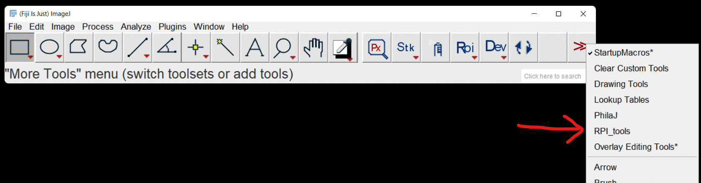
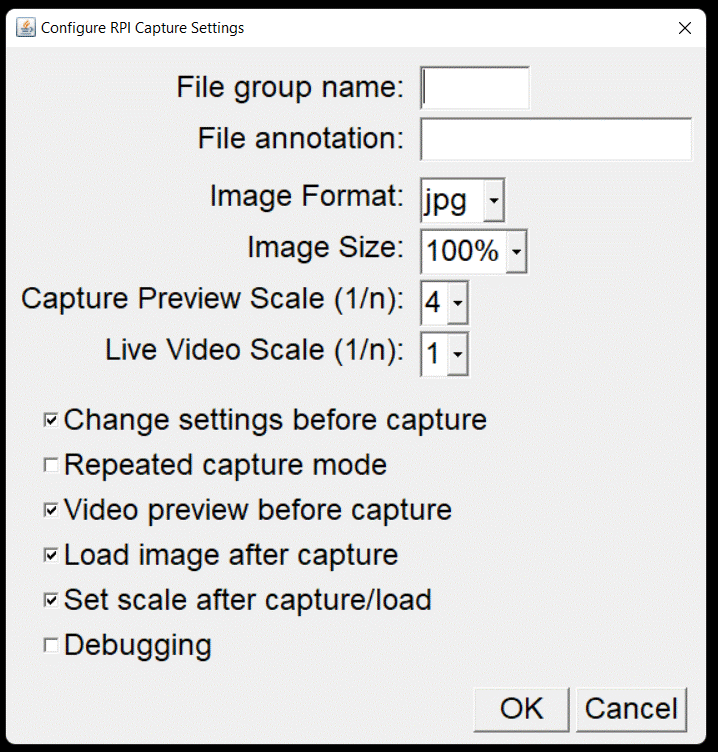
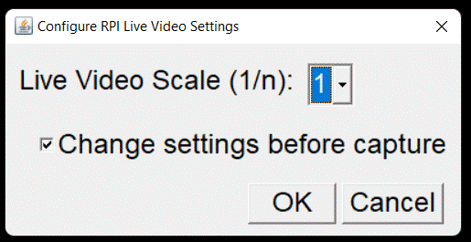
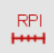

RPI Tools
| Author: | Mitch Richling |
| Updated: | 2022-01-24 |
Copyright 2022 Mitch Richling. All rights reserved.
Table of Contents
Check out my home page for more stuff: https://www.mitchr.me/
1 RPI Software
My goals:
- Capture images directly from ImageJ/Fiji so I could immediately preform an image analysis
- My #1 most used image analysis activity is measuring stuff (lengths, etc…) so setting image scale needs to be easy
- Capture images from the command line as well, but such that it is easy to load them in ImageJ/Fiji later
- See a live view from the camera
- Simple to sync data between camera and primary workstation
- Identical ImageJ/Fiji UI between Windows and RPI
In the end I wrote a command line script and a set of ImageJ/Fiji toolbar macros that work together. I say they work together in that they both save newly captured images to the same directory using the same file name conventions. For example, this makes it easy to load the last thing captured by the command line script into ImageJ/Fiji.
1.1 RPI Image Capture Script
This script is pretty simple. It provides a way to capture one or more images outside of ImageJ/Fiji, but in a way compatible with the ImageJ/Fiji macros provided below. I use this script quite a lot to provide a live view of the camera feed.
#!/bin/bash # -*- Mode:Shell-script; Coding:us-ascii-unix; fill-column:158 -*- ################################################################################################################################################################ ## # @file piSnap.sh # @author Mitch Richling https://www.mitchr.me # @brief @EOL # @keywords raspberry pi hq camera image capture # @std bash # @copyright # @parblock # Copyright (c) 2021, Mitchell Jay Richling <https://www.mitchr.me> All rights reserved. # # Redistribution and use in source and binary forms, with or without modification, are permitted provided that the following conditions are met: # # 1. Redistributions of source code must retain the above copyright notice, this list of conditions, and the following disclaimer. # # 2. Redistributions in binary form must reproduce the above copyright notice, this list of conditions, and the following disclaimer in the documentation # and/or other materials provided with the distribution. # # 3. Neither the name of the copyright holder nor the names of its contributors may be used to endorse or promote products derived from this software without # specific prior written permission. # # THIS SOFTWARE IS PROVIDED BY THE COPYRIGHT HOLDERS AND CONTRIBUTORS "AS IS" AND ANY EXPRESS OR IMPLIED WARRANTIES, INCLUDING, BUT NOT LIMITED TO, THE # IMPLIED WARRANTIES OF MERCHANTABILITY AND FITNESS FOR A PARTICULAR PURPOSE ARE DISCLAIMED. IN NO EVENT SHALL THE COPYRIGHT HOLDER OR CONTRIBUTORS BE LIABLE # FOR ANY DIRECT, INDIRECT, INCIDENTAL, SPECIAL, EXEMPLARY, OR CONSEQUENTIAL DAMAGES (INCLUDING, BUT NOT LIMITED TO, PROCUREMENT OF SUBSTITUTE GOODS OR # SERVICES; LOSS OF USE, DATA, OR PROFITS; OR BUSINESS INTERRUPTION) HOWEVER CAUSED AND ON ANY THEORY OF LIABILITY, WHETHER IN CONTRACT, STRICT LIABILITY, OR # TORT (INCLUDING NEGLIGENCE OR OTHERWISE) ARISING IN ANY WAY OUT OF THE USE OF THIS SOFTWARE, EVEN IF ADVISED OF THE POSSIBILITY OF SUCH DAMAGE. # @endparblock ################################################################################################################################################################ #--------------------------------------------------------------------------------------------------------------------------------------------------------------- read -r -d '' HELPT <<EOF Take a snapshot using the Raspberry Pi HQ Camera and save it in a standard way Use: piSnap.sh [options] Options: -p Preview! No images are captured. Other arguments are ignored -k Show a preview, and capture when [enter] is pressed. Without -k an image is immediatly captured with no preview -s Show image after capture with nomacs -a ANNO Annotation -g GROUP Group name -- used for grouping similar captures Adds a "_GROUP-NNN" component to the captured filename where GROUP is the group name provided on the command line and NNN is a zero padded integer index. If the previous capture has a diffrent group name, then the current capture will have a fresh time stamp in the name and an index of 001. If the previous capture has the same group name, then the current capture will reuse the time stamp in the name and an index incremented by 1. -v Verbose mode -f Fake Capture Mode that uses convert instead of libcamera-still Used for debugging. Most useful when combined with -v. -b BIN Full path to the libcamera-still binary Default: /usr/bin/libcamera-still -d DIR Directory to store captured images. Default: $HOME/Pictures/pi-cam Note: The related ImageJ/Fiji macro expects the default value! -e ENC File format: jpg, bmp, gif, png, rgb Default: jpg File Names Image names are like: YYYYMMDDHHMMSS_GROUP-ANNOTATION.ENC | | | | | File Annoation | Group Name date/time stamp - The "_GROUP" component of the name will not be pressent if the -g option was not provided. - The "-ANNOTATION" component of the name will not be pressent if the -a option was not provided. - The -a and -g arguments are translated automatically into something suitable: - Non-alphanumeric characters are converted to underscores. - Leading underscores and dashes are removed - The -g argument has all dashes removed EOF #--------------------------------------------------------------------------------------------------------------------------------------------------------------- FAKE_CAP='N' SHOW='N' WKEY='N' VERB='N' PREVIEW='N' GROUP='' OGROUP='' ANNOT='' OANNOT='' ODIR="$HOME/Pictures/pi-cam" IENC='jpg' RASPISP='/usr/bin/libcamera-still' while [[ "$1" = -* ]]; do case "$1" in -k ) WKEY='Y'; ;; # Capture multiple images -d ) ODIR="$2"; shift; ;; # Output directory -g ) OGROUP="$2"; shift; ;; # Group name -a ) OANNOT="$2"; shift; ;; # Annotation -v ) VERB='Y'; ;; # Verbose mode -f ) FAKE_CAP='Y'; ;; # Fake Capture mode -e ) IENC="$2"; shift; ;; # Output image format -s ) SHOW='Y'; ;; # Open captured images -p ) PREVIEW='Y'; ;; # Preview only -b ) RASPISP="$2"; shift; ;; # Location of libcamera-still binary * ) echo "ERROR: Unknown option: $1"; echo "$HELPT"; exit; ;; esac shift; done if [ -n "$OANNOT" ]; then OANNOT="$OANNOT" ANNOT=`echo -n "$OANNOT" | tr -sc '[[:graph:]]' '_' | sed 's/[-_]*$//' | sed 's/^[-_]*//' ` fi if [ -n "$OGROUP" ]; then GROUP=`echo -n "$OGROUP" | tr -sc '[[:graph:]]' '_' | tr -s '-' '_' | sed 's/[-_]*$//' | sed 's/^[-_]*//' ` fi #--------------------------------------------------------------------------------------------------------------------------------------------------------------- if [ "$VERB" = 'Y' ]; then echo "DEBUG: WKEY $WKEY " echo "DEBUG: VERB $VERB " echo "DEBUG: PREVIEW $PREVIEW " echo "DEBUG: ANNOT $ANNOT " echo "DEBUG: OANNOT $OANNOT " echo "DEBUG: GROUP $GROUP " echo "DEBUG: OGROUP $OGROUP " echo "DEBUG: WIDTH $WIDTH " echo "DEBUG: ODIR $ODIR " echo "DEBUG: IENC $IENC " fi #--------------------------------------------------------------------------------------------------------------------------------------------------------------- if [ -n "$2" ]; then echo "ERROR: Arguments ignored: $@" echo "$HELPT" exit fi if [[ ! "$IENC" =~ ^(jpg|bmp|gif|png|rgb)$ ]]; then echo "ERROR: Encodeing of '$IENC' is not supported!" echo "$HELPT" exit fi if [ ! -x "$RASPISP" ]; then if [ "$FAKE_CAP" = 'Y' ]; then if [ "$VERB" = 'Y' ]; then echo "DEBUG: In FAKE_CAP mode. Didn't find $RASPISP" fi else echo "ERROR: $RASPISP not found!" echo "$HELPT" exit fi fi if [ ! -d "$ODIR" ]; then mkdir "$ODIR" if [ -d "$ODIR" ]; then echo "WARNING: Output directory was created: $ODIR" else echo "ERROR: Output directory not found/created: $ODIR" echo "$HELPT" exit fi fi #--------------------------------------------------------------------------------------------------------------------------------------------------------------- DACMD="$RASPISP" OFILE='' if [ "$IENC" = "raw" ]; then DACMD="$DACMD -r" IENC='jpg' fi if [ "$PREVIEW" = 'Y' ]; then DACMD="$DACMD -t 0" else if [ "$WKEY" = "Y" ]; then DACMD="$DACMD -t 0 -k" else DACMD="$DACMD -t 1 -n" fi if [ "$IENC" = "jpg" ]; then DACMD="$DACMD -q 100" fi OFILE=$ODIR'/'`date '+%Y%m%d%H%M%S'` if [ -n "$GROUP" ]; then OFILE=${OFILE}'_'${GROUP} fi if [ -n "$ANNOT" ]; then OFILE=${OFILE}'-'${ANNOT} fi OFILE=${OFILE}'.'$IENC DACMD="$DACMD -e $IENC -o $OFILE" fi if [ "$VERB" = 'Y' ]; then echo "DEBUG: Command to run: $DACMD" fi if [ "$FAKE_CAP" = 'Y' ]; then if [ "$PREVIEW" = 'Y' ]; then DACMD='true' else DACMD="convert -size 1024x1024 xc:white $OFILE" fi if [ "$VERB" = 'Y' ]; then echo "DEBUG: In FAKE_CAP mode. New command to run: $DACMD" fi fi $DACMD #--------------------------------------------------------------------------------------------------------------------------------------------------------------- if [ -n "$OFILE" -a -e "$OFILE" ]; then echo "INFO: Captured Image File:" ls -l "$OFILE" | sed 's/^/ /' if [ "$SHOW" = 'Y' ]; then if [ -x '/usr/bin/nomacs' ]; then /usr/bin/nomacs "$OFILE" else echo 'ERROR: Unable to open image (/usr/bin/nomacs) not found.' fi fi else echo "ERROR: No image captured!" fi
1.2 ImageJ/Fiji Toolset/Macros
The code below provides an ImageJ/Fiji toolset. You activate the tool set via the toolset menu:

Once activated, it will add four buttons to the toolbar:

Button Functions:

- Capture, ssave, and open an image from the camera. Images are stored in the same location, and with the same file name conventions, used by
piSnap.sh. - Change some configuration options

- Specify a group for the captured image filenames. See
piSnapfor filename details. - Specify an annotation for the captured image filenames. See
piSnapfor filename details. - Set captured image format (jpg or png)
- Set captured image scale (100% or 50%)
- Set the scale factor for capture preview
- Set the scale factor for the live video feed
- Turn on/off asking for settings for each capture – essentially pops up the settings dialog box everything the capture button is hit
- Turn on/off repeated capture mode – repeatedly captures images. Most useful if a group is set.
- Turn on/off live video preview before a capture.
- Turn on/off loading images after capture.
- Turn on/off running the set image scale tool after each capture if the image scale is not already set
- Turn on/off debugging

- Live video feed from camera. Note the scale setting for the live video feed is diffrent from the capture preview scale.
If "Change Settings Before Capture" is set, then a simplified settings dialog box will appear before the video feed window.


- Load previous capture(s) from camera using the ImageJ/Fiji macro above or the
piSnap.shscript.

- 
- Set image scale based upon microscope settings. This script contains hardwired settings for my specific microscope and lenses, and may require modification for your microscope.

- The choice of microscope enables a calibration correction factor in the final computation
- The "Adjust for Resolution" option adjusts the scale if the number of horizontal pixels in the image differs from the horizontal resolution of the sensor. Most commonly this use used when the sensor is used in 2x2 mode yielding smaller image. This option also works if the image is resized after the fact.
// -*- Mode:C++; Coding:us-ascii-unix; fill-column:158 -*- ////////////////////////////////////////////////////////////////////////////////////////////////////////////////////////////////////////////////////////////// // @file RPI_tools.ijm // @author Mitch Richling https://www.mitchr.me // @brief This file is GENERATED from base-code.ijm & RPI_tools-toolset.ijm -- see the source files copyright & other information. ////////////////////////////////////////////////////////////////////////////////////////////////////////////////////////////////////////////////////////////// /// /// /// /// /// /// /// //////////////////////////////////////////////////////////////////////////////////////////////////////////////////////////////////////////////////////////////// //////////////////////////////////////////////////////////////////////////////////////////////////////////////////////////////////////////////////////////////// //////////////////////////////////////////////////////////////////////////////////////////////////////////////////////////////////////////////////////////////// //// Global Parameters //////////////////////////////////////////////////////////////////////////////////////////////////////////////////////////////////////////////////////////////// //////////////////////////////////////////////////////////////////////////////////////////////////////////////////////////////////////////////////////////////// //////////////////////////////////////////////////////////////////////////////////////////////////////////////////////////////////////////////////////////////// var gbl_OLT_colors = newArray("black", "blue", "green", "red", "yellow", "white"); // Option List: var gbl_OLT_lineWidth = newArray("1", "3", "5", "11", "15", "25", "35"); // Option List: var gbl_OLT_lnUnits = newArray("mm", "mil", "cm", "inch"); // Option List: var gbl_OLT_numPerf = newArray("5", "10", "15", "20", "25"); // Option List: var gbl_OLT_p2mdiv = newArray("0.1", "0.25", "0.5"); // Option List: var gbl_OLT_pfGrdCnt = newArray("AUTO", "10", "20", "30", "40", "50"); // Option List: var gbl_OLT_pfUnits = newArray("mm", "mil", "perfs/2cm"); // Option List: var gbl_OLT_pviewScl = newArray("1", "2", "4", "8"); // Option List: Microscope preview scale var gbl_OLT_letters = newArray("A", "B", "C", "D", "E", "F", "G", "H", "I", // Letter sequence -- mostly for lables "J", "K", "L", "M", "N", "O", "P", "Q", "R", "S", "T", "U", "V", "W", "X", "Y", "Z", "a", "b", "c", "d", "e", "f", "g", "h", "i", "j", "k", "l", "m", "n", "o", "p", "q", "r", "s", "t", "u", "v", "w", "x", "y", "z"); var gbl_OLT_sGauges = newArray("Updated Kiusalas Perforation Gauge", // Option List: Known Specialized Gauges "Traditional Kiusalas Perforation Gauge", "Liberty Issue Perforation Gauge", "Bari Wolf Issue Perforation Gauge", "Single Line Custom Perforation Gauge"); var gbl_OLT_fontMag = newArray("25%", "50%", "75%", "100%", "150%", "200%", "300%"); // Option List: Font size magnfication var gbl_ALL_color1 = "yellow"; // Multi-Tool Option: var gbl_ALL_color2 = "blue"; // Multi-Tool Option: var gbl_ALL_debug = false; // Multi-Tool Option: Debuging messages var gbl_ALL_doScl = true; // Multi-Tool Option: Set scale after RPI capture/load var gbl_ALL_fMag = "100%"; // Font size magnification var gbl_ALL_fillDots = true; // Specialized Perforation Gauge Overlay: Fill dots in gauges (specialized & dynamic) var gbl_ALL_font = "SanSerif"; // Multi-Tool Option: var gbl_ALL_lastPhOvr = ""; // Multi-Tool Option: Last PhilaJ Overlay drawn var gbl_ALL_lineWidth = "3"; // Multi-Tool Option: var gbl_ALL_numPerf = "15"; // Multi-Tool Option: Number of perf holes or lines on gauge overlays -- note it is a string var gbl_ALL_perfOrder = false; // Multi-Tool Option: Ordering of perf sizes top to bottom var gbl_cer_edges = "Vertical"; // Coil Edge Report: Coil Format -- coilEdgeReport var gbl_cer_minTal = 25.0; // Coil Edge Report: minimum paper height -- coilEdgeReport var gbl_cer_minWid = 22.5; // Coil Edge Report: minimum paper width -- coilEdgeReport var gbl_cer_nParThr = 0.5; // Coil Edge Report: Near Parallel Threshold -- coilEdgeReport var gbl_cer_parThr = 0.1; // Coil Edge Report: Parallel Threshold -- coilEdgeReport var gbl_cot_ROItag = ""; // Coordinate Tool: If not empty, then add ROI to ROI Manager var gbl_cot_clickMeas = true; // Coordinate Tool: Measure point ROI for each click var gbl_cot_clickOvr = true; // Coordinate Tool: Add point ROI to overlay for each click var gbl_cot_cordIdx = 0; // Coordinate Tool: Internal counter of how many points have been created so far in this session var gbl_csg_file = getDirectory("home"); // File Based Specialized Perforation Gauge Overlay: var gbl_d2p_holes = 15; // Distance to Perforation: hole count var gbl_d2p_len = 20; // Distance to Perforation: length var gbl_dyn_HUDdo = true; // Dynamic Perforation Gauge: Show the perf HUD all the time var gbl_dyn_HUDpx = NaN; // Dynamic Perforation Gauge: X coordinate (in pixels) for perf HUD (NaN means image center) var gbl_dyn_HUDpy = NaN; // Dynamic Perforation Gauge: Y coordinate (in pixels) for perf HUD (NaN means image center) var gbl_dyn_autoRep = false; // Dynamic Perforation Gauge: Show dynamic report dialog all the time var gbl_dyn_dotSz = 1; // Dynamic Perforation Gauge: Size of dots var gbl_dyn_dotSzMn = 0.5; // Dynamic Perforation Gauge: Minimum size of dots var gbl_dyn_dotSzMx = 1.5; // Dynamic Perforation Gauge: Maximum size of dots var gbl_dyn_nuGap = 1.5; // Dynamic Perforation Gauge: Size of perf gap for newly drawn gauges var gbl_dyn_numPerf = 15; // Dynamic Perforation Gauge: Number fo perf holes. Note it is a number, and we do not use gbl_ALL_numPerf var gbl_dyn_rimt = false; // Dynamic Perforation Gauge: Put results in results table or in new window var gbl_dyn_roiMgrU = "NONE"; // Dynamic Perforation Gauge: How ROI manager is used var gbl_dyn_roiPfx = ""; // Dynamic Perforation Gauge: ROI prefix to use for ROI bound ROIs var gbl_grl_doMGB = false; // Grill Template: var gbl_grl_doOut = true; // Grill Template: var gbl_grl_doPbox = true; // Grill Template: var gbl_grl_doPcross = false; // Grill Template: var gbl_grl_doPridge = true; // Grill Template: var gbl_grl_numH = 14; // Grill Template: Number of grill points horizontally var gbl_grl_numV = 17; // Grill Template: Number of grill points vertically var gbl_grl_ptype = ""; // Grill Template: Previously selected grill type var gbl_grl_type = "E"; // Grill Template: Selected grill type var gbl_l2l_len = 1; // Length Conversion Tool: Length to convert var gbl_l2l_units = "inch"; // Length Conversion Tool: Units to convert from var gbl_lil_group = ""; // Load Last RPI Image: group name var gbl_lil_which = "Last"; // Load Last RPI Image: Which ones (first, last, etc...) var gbl_nst_mFrc = false; // Instanta Perforation Gauge Overlay: var gbl_nst_mdiv = "0.1"; // Instanta Perforation Gauge Overlay: var gbl_nst_pMax = 14; // Instanta Perforation Gauge Overlay: var gbl_nst_pMin = 9; // Instanta Perforation Gauge Overlay: var gbl_pcv_inv = 0; // Perferation unit conversion: value to convert var gbl_pic_anno = ""; // RPI Image Capture: File annotation for RPI captured images var gbl_pic_doSet = true; // RPI Image Capture: Change settings before RPI capture var gbl_pic_group = ""; // RPI Image Capture: File group name for RPI captured images var gbl_pic_ifmt = "jpg"; // RPI Image Capture: Image Format for RPI captured images var gbl_pic_loadem = true; // RPI Image Capture: Load image after capture var gbl_pic_pviewDo = true; // RPI Image Capture: Video preview before RPI capture var gbl_pic_pviewScl = 4; // RPI Image Capture: RPI Capture Preview Scale (1/n) var gbl_pic_repeat = false; // RPI Image Capture: Repeated RPI capture mode var gbl_pic_res = "100%"; // RPI Image Capture: Image Size for RPI captured images var gbl_pic_useCam = true; // RPI Image Capture: Use the camera or fake it var gbl_pos_gridSize = 3; // Position Finder Overlay: var gbl_pos_numGrids = "AUTO"; // Position Finder Overlay: var gbl_pos_origX = 0; // Position Finder Overlay: x coordinate of the upper left origion of grid in pixels var gbl_pos_origY = 0; // Position Finder Overlay: y coordinate of the upper left origion of grid in pixels var gbl_r2d_targDPI = 2400; // Resize To DPI: var gbl_rho_angle = 0; // Rotate to Horizontal: Angle to rotate var gbl_spl_gName = gbl_OLT_sGauges[0]; // Specialized Perforation Gauge Overlay: var gbl_spl_perfDiams = newArray(); // Specialized Perforation Gauge Overlay: var gbl_spl_perfGaps = newArray(); // Specialized Perforation Gauge Overlay: var gbl_spl_perfLabs = newArray(); // Specialized Perforation Gauge Overlay: var gbl_spl_useDots = true; // Specialized Perforation Gauge Overlay: var gbl_ssm_aux = "0.63"; // Scale RPI Image: Microscope Aux Lens var gbl_ssm_cam = "RPI"; // Scale RPI Image: Camera var gbl_ssm_gbl = false; // Scale RPI Image: When setting RPI image scale, make it global var gbl_ssm_res = false; // Scale RPI Image: RPI Adjust for Resolution when scaleing images var gbl_ssm_scope = "Leica S8API"; // Scale RPI Image: Microscope Model var gbl_ssm_vobj = "0.32"; // Scale RPI Image: Microscope Video Objective var gbl_ssm_zoom = "1.00"; // Scale RPI Image: Microscope Zoom var gbl_ssp_gapu = "perfs/2cm"; // Single Line Specialized Perforation Gauge Overlay: var gbl_ssp_gapv = 12; // Single Line Specialized Perforation Gauge Overlay: var gbl_ssp_lab = ""; // Single Line Specialized Perforation Gauge Overlay: var gbl_ssp_sizu = "mm"; // Single Line Specialized Perforation Gauge Overlay: var gbl_ssp_sizv = 1; // Single Line Specialized Perforation Gauge Overlay: var gbl_sus_cols = 10; // Slice Up Sheet: var gbl_sus_rows = 10; // Slice Up Sheet: var gbl_vid_pviewScl = "1"; // RPI Live Video Preview: Live RPI Video Scale (1/n) //////////////////////////////////////////////////////////////////////////////////////////////////////////////////////////////////////////////////////////////// //////////////////////////////////////////////////////////////////////////////////////////////////////////////////////////////////////////////////////////////// //////////////////////////////////////////////////////////////////////////////////////////////////////////////////////////////////////////////////////////////// //// Functions //////////////////////////////////////////////////////////////////////////////////////////////////////////////////////////////////////////////////////////////// //////////////////////////////////////////////////////////////////////////////////////////////////////////////////////////////////////////////////////////////// //////////////////////////////////////////////////////////////////////////////////////////////////////////////////////////////////////////////////////////////// //////////////////////////////////////////////////////////////////////////////////////////////////////////////////////////////////////////////////////////////// // Measure an OVERLAY potentially in combination with an existing selection function philMeausreOverlay() { if (gbl_ALL_debug) print("DEBUG(philMeausreOverlay): Function Entry"); exitIfNoImages("philMeausreOverlay"); if (selectionType >= 0) run("Measure"); if (Overlay.size > 0) { if ((gbl_ALL_lastPhOvr == "philPosFinderAction") || (gbl_ALL_lastPhOvr == "dynamicPerfDraw")) { theSelType = selectionType; if (theSelType >= 0) { theSelName = Roi.getName; Roi.getBounds(theSelX, theSelY, theSelWidth, theSelHeight); if (theSelType == 5) getLine(theSelX1, theSelY1, theSelX2, theSelY2, theSelLineWidth); } overlayType = getOverlayCapPointName(); if (overlayType == "philPosFinderAction") { posP1 = philPosFinderCoord( theSelX, theSelY, true); posP2 = philPosFinderCoord(theSelX + theSelWidth, theSelY + theSelHeight, true); pos = posP1 + "-" + posP2; if (gbl_pos_gridSize == 3) setResult('Thirkell', nResults-1, pos); else setResult('pos', nResults-1, pos); updateResults(); } else if (overlayType == "dynamicPerfDraw") { dynamicPerfMeasure(); } else { gbl_ALL_lastPhOvr == ""; } } } } //////////////////////////////////////////////////////////////////////////////////////////////////////////////////////////////////////////////////////////////// // Compute coordinates for point. function philPosFinderCoord(x, y, withOutOfBounds) { if (gbl_ALL_debug) print("DEBUG(philPosFinderCoord): Function Entry: ", x, y); ovlOff = getOverlayCapPointPos("philPosFinderAction"); relX = x - gbl_pos_origX; relY = y - gbl_pos_origY; toScaled(relX, relY); relXg = floor(relX / gbl_pos_gridSize); relYg = floor(relY / gbl_pos_gridSize); if (relXg < 0) if (withOutOfBounds) relXc = "<1"; else return "ERROR"; else relXc = d2s(relXg + 1, 0); if (relYg < 0) if (withOutOfBounds) relYc = "<A"; else return "ERROR"; else if (relYg > 51) if (withOutOfBounds) relYc = ">" + gbl_OLT_letters[51]; else return "ERROR"; else relYc = gbl_OLT_letters[relYg]; pos = relYc + relXc; return pos; } //////////////////////////////////////////////////////////////////////////////////////////////////////////////////////////////////////////////////////////////// // Simple tool to compute perfs from distance & hole count function convertDistanceToPerf() { if (gbl_ALL_debug) print("DEBUG(convertDistanceToPerf): Function Entry"); if (nImages > 0) { if (selectionType == 5) { pixelLengthUnit = getImageScaleUnits("NONE"); getLine(x1, y1, x2, y2, lineWidth); toScaled(x1, y1); toScaled(x2, y2); tmpLen1 = hypot2(x1, x2, y1, y2); tmpLen2 = convertLengthToMM(tmpLen1, pixelLengthUnit); if (isNaN(tmpLen2)) { showMessage("PhilaJ: convertDistanceToPerf", "WARNING: Length measured of line ROI is in an unknown unit (" + pixelLengthUnit + ")!"); gbl_d2p_len = tmpLen1; } else { gbl_d2p_len = tmpLen2; } } } Dialog.create("PhilaJ: Convert distance to perferation measurement"); Dialog.addNumber("Distance:", gbl_d2p_len, 4, 10, ""); Dialog.addToSameRow(); Dialog.addChoice("", gbl_OLT_lnUnits,"mm"); Dialog.addNumber("Holes:", gbl_d2p_holes, 0, 3, ""); Dialog.show(); gbl_d2p_len = Dialog.getNumber(); lenUnits = Dialog.getChoice(); gbl_d2p_holes = Dialog.getNumber(); lenInMM = convertLengthToMM(gbl_d2p_len, lenUnits); perfFromDistReport(lenInMM, gbl_d2p_holes, -1, false); } //////////////////////////////////////////////////////////////////////////////////////////////////////////////////////////////////////////////////////////////// // Simple tool to Convert Kiusalas to Perferations per 2cm") function convertKperfAndPerf20(k2p) { if (gbl_ALL_debug) print("DEBUG(convertKperfAndPerf20): Function Entry"); Dialog.create("PhilaJ: Convert Kiusalas to Perferations per 2cm"); if (k2p) Dialog.addNumber("Kiusalas:", gbl_pcv_inv, 4, 10, "mil"); else Dialog.addNumber("Perferation:", gbl_pcv_inv, 4, 10, "perf/2cm"); Dialog.show(); gbl_pcv_inv = Dialog.getNumber(); outv = 100000.0 / (127.0 * gbl_pcv_inv); if (k2p) { perf20 = outv; perfk = gbl_pcv_inv; } else { perf20 = gbl_pcv_inv; perfk = outv; } Quantity = newArray( "Perfs", "Kiusalas"); Value = newArray( perf20, perfk); Unit = newArray("perf/2cm", "mil"); Array.show("PhilaJ: Perforation Report", Quantity, Value, Unit); } //////////////////////////////////////////////////////////////////////////////////////////////////////////////////////////////////////////////////////////////// // Search for inPat in anArray, and return index of frist element matching pattern. function indexOfInArray(anArray, inPat) { theIndex = -1; for(i=0; i<anArray.length; i++) { if (matches(anArray[i], inPat)) { theIndex = i; break; } } return theIndex; } //////////////////////////////////////////////////////////////////////////////////////////////////////////////////////////////////////////////////////////////// // Get a list of known specialized gauges function getSpecializedGaugeList() { if (gbl_ALL_debug) print("DEBUG(getSpecializedGaugeList): Function Entry"); perfPath = pathJoin(newArray(getDirectory("home"), ".philaj", "perfs")); if (File.isDirectory(perfPath)) { perfFiles = getFileList(perfPath); if (perfFiles.length > 0) { perfFiles = Array.filter(perfFiles, "(^[^ ][^ ]*\\.ijm$)"); if (perfFiles.length > 0) { if (gbl_ALL_debug) print("DEBUG(getSpecializedGaugeList): Gauges found:: " + String.join(perfFiles, ", ")); for(i=0; i<perfFiles.length; i++) { perfFiles[i] = substring(replace(perfFiles[i], "_", " "), 0, lengthOf(perfFiles[i])-4); } return Array.concat(gbl_OLT_sGauges, perfFiles); } } } else { if (gbl_ALL_debug) print("DEBUG(getSpecializedGaugeList): Custom perf path not found: " + perfPath); } return gbl_OLT_sGauges; } //////////////////////////////////////////////////////////////////////////////////////////////////////////////////////////////////////////////////////////////// // Copy bounding box for current selection, and create new image with copied data. Set scale for new image to the source image scale. Tries to give the // new image a sensable name (something like ROI_from_file or from_file) function selectionToImage() { if (gbl_ALL_debug) print("DEBUG(selectionToImage): Function Entry"); exitIfNoImages("selectionToImage"); checkImageScalePhil(false, true); if (selectionType < 0) exit("ERROR(selectionToImage): No active selection found!"); srcImageTitle = getTitle(); srcROI = Roi.getName; getPixelSize(pixelLengthUnit, pixelWidth, pixelHeight); run("To Bounding Box"); run("Copy"); run("Internal Clipboard"); run("Set Scale...", " known=" + d2s(pixelWidth, 10) + " unit=mm distance=1 pixel=" + d2s(pixelWidth/pixelHeight, 10)); newTitle = srcROI; if (lengthOf(newTitle) > 0) newTitle = newTitle + "_"; newTitle = newTitle + "from_" + srcImageTitle; rename(newTitle); } //////////////////////////////////////////////////////////////////////////////////////////////////////////////////////////////////////////////////////////////// // Spin till the user takes the finger off the mouse button function eatClicks() { if (gbl_ALL_debug) print("DEBUG(eatClicks): Function Entry"); if (nImages > 0) { do { getCursorLoc(x, y, z, flags); wait(20); } while (flags != 0); } } //////////////////////////////////////////////////////////////////////////////////////////////////////////////////////////////////////////////////////////////// // Delete ROIs related to design/paper measurements. function deleteDesignAndPaperROIs() { if (gbl_ALL_debug) print("DEBUG(deleteDesignAndPaperROIs): Function Entry"); deleteNamedROI("ALL"); deleteNamedROI("paperBB"); deleteNamedROI("designBB"); deleteNamedROI("marginT"); deleteNamedROI("marginB"); deleteNamedROI("marginL"); deleteNamedROI("marginR"); deleteNamedROI("design"); deleteNamedROI("^design_..*$"); deleteNamedROI("paper"); deleteNamedROI("^paper_..*$"); } //////////////////////////////////////////////////////////////////////////////////////////////////////////////////////////////////////////////////////////////// // Delete ROIs related to perforations function deletePerfROIs() { if (gbl_ALL_debug) print("DEBUG(deletePerfROIs): Function Entry"); deleteNamedROI("^.*_[0-9][0-9]_perfs"); deleteNamedROI("^.*_[0-9][0-9]_[0-9][0-9]_pHo$"); } //////////////////////////////////////////////////////////////////////////////////////////////////////////////////////////////////////////////////////////////// // Delete ROIs related to grill points function deleteGrillRelatedROIs() { deleteNamedROI("^pt_grill_..*$"); deleteNamedROI("psBB_grill"); deleteNamedROI("grill"); deleteNamedROI("^grill_..*$"); } //////////////////////////////////////////////////////////////////////////////////////////////////////////////////////////////////////////////////////////////// // Process clicks for the "PhilaJ Overlay Interaction Tool" macro function moveOverlayClicks() { if (gbl_ALL_debug) print("DEBUG(moveOverlayClicks): Function Entry"); if (nImages > 0) { ovrSize = Overlay.size; if (ovrSize > 0) { getCursorLoc(lastX, lastY, z, flags); while ((flags & 16) > 0) { getCursorLoc(curX, curY, z, flags); for (i=0; i<ovrSize; i++) { Overlay.activateSelection(i); Overlay.getBounds(i, selectionX, selectionY, selectionW, selectionH); Overlay.moveSelection(i, selectionX + curX - lastX, selectionY + curY - lastY); } lastX = curX; lastY = curY; wait(20); } } } } //////////////////////////////////////////////////////////////////////////////////////////////////////////////////////////////////////////////////////////////// // If preset is "", then dumps out list of lables. Otherwise returns an array with gaps, diam, lab function perfPresetLookup(preset) { if (gbl_ALL_debug) print("DEBUG(perfPresetLookup): Function Entry: ", preset); names = newArray("Kiusalas 95.0 8.29", "Kiusalas 81.0 9.72", "Kiusalas 80.0 9.84", "Kiusalas 79.0 9.97", "Kiusalas 75.0 10.50", "Kiusalas 73.0 10.79", "Kiusalas 72.5 10.86", "Kiusalas 72.0 10.94", "Kiusalas 70.0 11.25", "Kiusalas 67.0 11.75", "Kiusalas 66.0 11.93", "Kiusalas 63.0 12.50", "Kiusalas 51.0 15.44", "Liberty Issues Small 9.84", "Liberty Issues Large 10.50", "Liberty Issues Large 10.94", "Liberty Issues Large 11.25", "Bari Wolf 10.86", "Bari Wolf 10.88", "Bari Wolf 11.00", "Bari Wolf 11.43", "Bari Wolf 11.45"); labs = newArray( "95.0 8.29", "81.0 9.72", "80.0 9.84", "79.0 9.97", "75.0 10.50", "73.0 10.79", "72.5 10.86", "72.0 10.94", "70.0 11.25", "67.0 11.75", "66.0 11.93", "63.0 12.50", "51.0 15.44", "Sm 9.84", "Lg 10.50", "Lg 10.94", "Lg 11.25", "BW Sm 10.86", "BW Md 10.88", "BW Lg 11.00", "BW Lg 11.43", "BW Lg 11.45"); gaps = newArray( 95.0*0.0254, 81.0*0.0254, 80.0*0.0254, 79.0*0.0254, 75.0*0.0254, 73.0*0.0254, 72.5*0.0254, 72.0*0.0254, 70.0*0.0254, 67.0*0.0254, 66.0*0.0254, 63.0*0.0254, 51.0*0.0254, 80.0*0.0254, 75.0*0.0254, 72.0*0.0254, 70.0*0.0254, 20/10.86, 20/10.88, 20/11.00, 20/11.43, 20/11.45); diam = newArray( 1.000, 1.000, 1.000, 1.000, 1.000, 1.000, 1.000, 1.000, 1.000, 1.000, 1.000, 0.850, 0.700, 0.950, 1.100, 1.100, 1.100, 0.93, 1.02, 1.06, 1.06, 1.06); if (preset == "") { return names; } else { presetIdx = indexOfInArray(names, preset); return newArray(diam[presetIdx], gaps[presetIdx], labs[presetIdx]); } } //////////////////////////////////////////////////////////////////////////////////////////////////////////////////////////////////////////////////////////////// // Process option requests from the "Dynamic Perforation Tool" macro function dynamicPerfOptions(queryForPreset) { if (gbl_ALL_debug) print("DEBUG(dynamicPerfOptions): Function Entry"); if (queryForPreset) { lables = perfPresetLookup(""); Dialog.create("PhilaJ: Dynamic Perforation Tool Preset Options"); Dialog.addChoice("Preset:", lables, lables[0]); Dialog.show(); presetName = Dialog.getChoice(); presetData = perfPresetLookup(presetName); gbl_dyn_dotSz = presetData[0]; gbl_dyn_nuGap = presetData[1]; } fontChoiceList = getFavFontList(); Dialog.create("PhilaJ: Dynamic Perforation Tool Options"); Dialog.addChoice("color1:", gbl_OLT_colors, gbl_ALL_color1); Dialog.addNumber("Dot Count:", gbl_dyn_numPerf, 0, 6, ""); Dialog.addNumber("Dot Size:", gbl_dyn_dotSz, 3, 6, "mm"); Dialog.addChoice("Line Width:", gbl_OLT_lineWidth, gbl_ALL_lineWidth); Dialog.addChoice("Font:", fontChoiceList, gbl_ALL_font); Dialog.addChoice("Font Size:", gbl_OLT_fontMag, gbl_ALL_fMag); Dialog.addChoice("ROI Manager Use", newArray("NONE", "JUST LINE", "LINE & END PERFS", "LINE & ALL PERFS"), gbl_dyn_roiMgrU); Dialog.addCheckbox("Results in measure table", gbl_dyn_rimt); Dialog.addCheckbox("Show Perf Readout HUD", gbl_dyn_HUDdo); Dialog.addCheckbox("Always Show Perf Report", gbl_dyn_autoRep); Dialog.addCheckbox("Fill Dots", gbl_ALL_fillDots); Dialog.addCheckbox("Reset Perf Readout HUD Location", false); Dialog.show(); gbl_ALL_color1 = Dialog.getChoice(); gbl_dyn_numPerf = round(minOf(50, maxOf(2, Dialog.getNumber()))); gbl_dyn_dotSz = minOf(maxOf(Dialog.getNumber(), gbl_dyn_dotSzMn), gbl_dyn_dotSzMx); gbl_ALL_lineWidth = Dialog.getChoice(); old_font = gbl_ALL_font; gbl_ALL_font = Dialog.getChoice(); old_fMag = gbl_ALL_fMag; gbl_ALL_fMag = Dialog.getChoice(); gbl_dyn_roiMgrU = Dialog.getChoice(); gbl_dyn_rimt = Dialog.getCheckbox(); old_HUDdo = gbl_dyn_HUDdo; gbl_dyn_HUDdo = Dialog.getCheckbox(); gbl_dyn_autoRep = Dialog.getCheckbox(); gbl_ALL_fillDots = Dialog.getCheckbox(); resetHUDloc = Dialog.getCheckbox(); if (resetHUDloc || (old_font !=gbl_ALL_font) || (old_fMag != gbl_ALL_fMag) || (old_HUDdo != gbl_dyn_HUDdo)) { gbl_dyn_HUDpx = NaN; gbl_dyn_HUDpy = NaN; } if(nImages > 0) if (queryForPreset) dynamicPerfDraw(0, 0, -1, 0, 0, 0); else if ("dynamicPerfDraw" == getOverlayCapPointName()) dynamicPerfClicks(true); else dynamicPerfDraw(0, 0, -1, 0, 0, -1); } //////////////////////////////////////////////////////////////////////////////////////////////////////////////////////////////////////////////////////////////// // Process clicks from the "Dynamic Perforation Tool" macro function dynamicPerfClicks(justRedraw) { if (gbl_ALL_debug) print("DEBUG(dynamicPerfClicks): Function Entry: ", justRedraw); if (nImages > 0) { if ("dynamicPerfDraw" == getOverlayCapPointName()) { // Click that activated tool if ( !(justRedraw)) getCursorLoc(firstX, firstY, firstZ, firstFlags); checkImageScalePhil(false, true); // Get data from overlay... ovrDat = dynamicPerfOverlayInfo(); dxF = ovrDat[0]; dyF = ovrDat[1]; dxO = ovrDat[2]; dyO = ovrDat[3]; Oidx = gbl_dyn_numPerf - 1; // Set using gbl_dyn_numPerf & not dynamicPerfOverlayInfo() so pick up the new value if it has changed // If justRedraw, then redraw and exit macro if (justRedraw) { dynamicPerfDraw(dxF, dyF, 0, dxO, dyO, Oidx); exit; } firstEventClickP = ((firstFlags & 16) != 0); firstEventContrP = ((firstFlags & 2) != 0); firstEventAltP = ((firstFlags & 8) != 0); firstEventShiftP = ((firstFlags & 1) != 0); if (firstEventClickP) { // Got a click, so we do something... // Where was that first click? clickedROI = Overlay.indexAt(firstX, firstY); if ( (clickedROI == "") || (clickedROI < 0) ) clickedROI = -1; if (clickedROI < gbl_dyn_numPerf) clickedDot = clickedROI; else clickedDot = -1; dotClickedP = (clickedDot >= 0); hudClickedP = (clickedROI == gbl_dyn_numPerf); if (firstEventContrP) { //- With a control key -- report perfs dynamicPerfMeasure(); eatClicks(); } else if (firstEventAltP) { //- alt key -> delete or add dots if (clickedDot >= 0) { // Got a click on a dot if (clickedDot < (gbl_dyn_numPerf-1-clickedDot)) { zapDir = -1; zapSpt = 0; } else { zapDir = 1; zapSpt = clickedDot+1; } for(i=clickedDot+zapDir; (i>=0)&&(i<gbl_dyn_numPerf); i=i+zapDir) Overlay.removeSelection(zapSpt); gbl_dyn_numPerf = Overlay.size-2; } else { gbl_dyn_numPerf++; tmp1 = hypot2(firstX, dxF, firstY, dyF); tmp2 = hypot2(firstX, dxO, firstY, dyO); if (tmp1 < tmp2) dynamicPerfDraw(dxF, dyF, 1, dxO, dyO, Oidx+1); else dynamicPerfDraw(dxF, dyF, 0, dxO, dyO, Oidx); } eatClicks(); } else { //- No modifier or shift -> one of: move all dots, move hud, move dot, resize dots lastX = firstX; lastY = firstY; do { getCursorLoc(x, y, z, flags); if ((flags & 16) != 0) { // Got another click if (firstEventShiftP) { // shift -> resize dots if ((lastX != x) || (lastY != y)) { tmp2 = distPtLine(lastX, lastY, dxF, dyF, dxO, dyO); tmp1 = distPtLine( x, y, dxF, dyF, dxO, dyO); if (tmp1 < tmp2) gbl_dyn_dotSz = minOf(maxOf(gbl_dyn_dotSz - 0.01, gbl_dyn_dotSzMn), gbl_dyn_dotSzMx); else gbl_dyn_dotSz = minOf(maxOf(gbl_dyn_dotSz + 0.01, gbl_dyn_dotSzMn), gbl_dyn_dotSzMx); dotSzX = gbl_dyn_dotSz; dotSzY = gbl_dyn_dotSz; toUnscaled(dotSzX, dotSzY); dynamicPerfDraw(dxF, dyF, 0, dxO, dyO, Oidx); } } else if (gbl_dyn_HUDdo && hudClickedP) { // Clicked on perf HUD -> move hud gbl_dyn_HUDpx += (x-lastX); gbl_dyn_HUDpy += (y-lastY); dynamicPerfDraw(dxF, dyF, 0, dxO, dyO, Oidx); } else if (dotClickedP) { // Clicked on a dot -> move dot if (clickedDot >= floor(gbl_dyn_numPerf / 2)) { dxO = x; dyO = y; Oidx = clickedDot; dynamicPerfDraw(dxF, dyF, 0, dxO, dyO, Oidx); } else { dxF = x; dyF = y; Fidx = clickedDot; dynamicPerfDraw(dxF, dyF, Fidx, dxO, dyO, Oidx); } } else { // No dot, hud, or shift -> Translate ALL dots dxF += (x - lastX); dyF += (y - lastY); dxO += (x - lastX); dyO += (y - lastY); dynamicPerfDraw(dxF, dyF, 0, dxO, dyO, Oidx); } lastX=x; lastY=y; } wait(20); } while ((flags & 16) != 0); } } } } } //////////////////////////////////////////////////////////////////////////////////////////////////////////////////////////////////////////////////////////////// // Produce a perfeation report for existing overlay -- assumes overlay is active so check that before calling this. function dynamicPerfMeasure() { if (gbl_ALL_debug) print("DEBUG(dynamicPerfMeasure): Function Entry"); // Get data from overlay... ovrDat = dynamicPerfOverlayInfo(); dxF = ovrDat[0]; dyF = ovrDat[1]; dxO = ovrDat[2]; dyO = ovrDat[3]; szX = ovrDat[4]; szY = ovrDat[5]; numPerf = ovrDat[6]; dotSize = (szX+szY)/2.0; roiPfx = "dynPf"; if (gbl_dyn_roiMgrU != "NONE") { do { needPfx = false; Dialog.create("PhilaJ: Dynamic Perforation Tool"); Dialog.addString("ROI Name Prefix:", gbl_dyn_roiPfx, 5); Dialog.show(); gbl_dyn_roiPfx = Dialog.getString(); if (gbl_dyn_roiPfx == "") { showMessage("PhilaJ: dynamicPerfClicks", "ERROR: The ROI prefix must be set!"); needPfx = true; } if (indexOf(gbl_dyn_roiPfx, "_") >= 0) { showMessage("PhilaJ: dynamicPerfClicks", "ERROR: The ROI prefix must not contain an underscore (_) character!"); needPfx = true; } } while (needPfx); roiPfx = gbl_dyn_roiPfx; deleteNamedROI(roiPfx + "_" + intToZeroPadString(numPerf, 2) + "_perfs"); deleteNamedROI("(^" + roiPfx + "_" + intToZeroPadString(numPerf, 2) + "_[0-9][0-9]_pHo$)"); if (gbl_dyn_roiMgrU != "JUST LINE") for(i=0; i<numPerf; i++) if ((gbl_dyn_roiMgrU == "LINE & ALL PERFS") || (i == 0) || (i == (numPerf-1))) { Overlay.activateSelection(i); Roi.setName(roiPfx + "_" + intToZeroPadString(numPerf, 2) + "_" + intToZeroPadString(i+1, 2) + "_pHo"); roiManager("add"); } } if (gbl_dyn_rimt || (gbl_dyn_roiMgrU != "NONE")) { makeLine(dxF, dyF, dxO, dyO, parseInt(gbl_ALL_lineWidth)); Roi.setName(roiPfx + "_" + intToZeroPadString(numPerf, 2) + "_perfs"); Roi.setStrokeColor(gbl_ALL_color1); if (gbl_dyn_roiMgrU != "NONE") roiManager("add"); if (gbl_dyn_rimt) run("Measure"); } toScaled(dxF, dyF); toScaled(dxO, dyO); leng = hypot2(dxF, dxO, dyF, dyO); perfFromDistReport(leng, numPerf, dotSize, gbl_dyn_rimt); } //////////////////////////////////////////////////////////////////////////////////////////////////////////////////////////////////////////////////////////////// // Get data from existing "Dynamic Perforation Tool" overlay function dynamicPerfOverlayInfo() { if (gbl_ALL_debug) print("DEBUG(dynamicPerfOverlayInfo): Function Entry"); Overlay.activateSelection(0); lineWidth = Roi.getStrokeWidth; Roi.getBounds(dxF, dyF, szXF, szYF); szXF += lineWidth; szYF += lineWidth; dxF += szXF / 2 - lineWidth / 2; dyF += szYF / 2 - lineWidth / 2; run("Select None"); Overlay.getBounds(Overlay.size-3, dxO, dyO, tmpXO, tmpYO); dxO += szXF / 2 - lineWidth / 2; dyO += szYF / 2 - lineWidth / 2; toScaled(szXF, szYF); return newArray(dxF, dyF, dxO, dyO, szXF, szYF, Overlay.size-2); } //////////////////////////////////////////////////////////////////////////////////////////////////////////////////////////////////////////////////////////////// // Draw Dynamic Perforation gauge utility. If firstDotIndex or otherDotIndex is less than zero, then all arguments are ignored and approprate values // are 1) pulled from teh current ROI, or 2) are defaulted. function dynamicPerfDraw(firstDotX, firstDotY, firstDotIndex, otherDotX, otherDotY, otherDotIndex) { if (gbl_ALL_debug) print("DEBUG(dynamicPerfDraw): Function Entry: ", firstDotX, firstDotY, firstDotIndex, otherDotX, otherDotY, otherDotIndex); exitIfNoImages("dynamicPerfDrawOnLine"); checkImageScalePhil(false, true); if (firstDotIndex < 0) { numDots = -1; dotSize = -1; prefix = ""; colr = "none"; // If we have an active perf hole ROI, then find the line ROI if (selectionType == 1) if (endsWith(Roi.getName, "_pHo")) { roi_parts = split(Roi.getName, "_"); activateNamedROI(String.join(newArray(roi_parts[0], roi_parts[1], "perfs"), "_")); } // Extract info from our line selection if (selectionType == 5) { getLine(firstDotX, firstDotY, tmpSelEndX, tmpSelEndY, tmpSelWidth); lineROIname = Roi.getName; roi_parts = split(lineROIname, "_"); if (roi_parts.length == 3) { if (roi_parts[2] == "perfs") { tmp = parseInt(roi_parts[1]); if ( !(isNaN(tmp)) && (tmp>0) ) { prefix = roi_parts[0]; numDots = tmp; colr = Roi.getStrokeColor; dotROIname = replace(Roi.getName, "_perfs", "_01_pHo"); if ((existsInROImanagerEqual(lineROIname) >= 0) && (existsInROImanagerEqual(dotROIname) >= 0)) { tmpRC = activateNamedROI(dotROIname); if (tmpRC >= 0) { Roi.getBounds(tmpX, tmpX, tmpW, tmpH); dotSize = maxOf(tmpW, tmpH); toScaled(dotSize); activateNamedROI(lineROIname); } } } } } if (indexOfInArray(gbl_OLT_colors, colr) >= 0) gbl_ALL_color1 = colr; if (numDots > 0) gbl_dyn_numPerf = numDots; if (dotSize > 0) gbl_dyn_dotSz = dotSize; if (prefix.length > 0) gbl_dyn_roiPfx = prefix; firstDotIndex = 0; if (otherDotIndex < 0) { otherDotX = tmpSelEndX; otherDotY = tmpSelEndY; otherDotIndex = gbl_dyn_numPerf-1; } else { xDelta = tmpSelEndX - firstDotX; yDelta = tmpSelEndY - firstDotY; deltaL = hypot1(xDelta, yDelta); tmpX = gbl_dyn_nuGap; tmpY = gbl_dyn_nuGap; toUnscaled(tmpX, tmpY); otherDotX = firstDotX + tmpX * xDelta / deltaL; otherDotY = firstDotY + tmpY * yDelta / deltaL; otherDotIndex = 1; } } else { dotSzX = gbl_dyn_dotSz; dotSzY = gbl_dyn_dotSz; toUnscaled(dotSzX, dotSzY); firstDotX = minOf(dotSzX * 2, getWidth / 4); firstDotY = minOf(dotSzY * 2, getHeight / 4); otherDotX = firstDotX + toUnscaledX(gbl_dyn_nuGap); otherDotY = firstDotY; firstDotIndex = 0; otherDotIndex = 1; } } // Finally, it's time to draw something... run("Select None"); dotSzX = gbl_dyn_dotSz; dotSzY = gbl_dyn_dotSz; toUnscaled(dotSzX, dotSzY); setColor(gbl_ALL_color1); lineWidth = parseInt(gbl_ALL_lineWidth)-1; // We use -1 to get an even number because we divide it by two later and don't want rounding errors setLineWidth(lineWidth); xDelta = otherDotX - firstDotX; yDelta = otherDotY - firstDotY; xDelta = xDelta / (gbl_dyn_numPerf - 1) * ((gbl_dyn_numPerf-1) / (otherDotIndex - firstDotIndex)); yDelta = yDelta / (gbl_dyn_numPerf - 1) * ((gbl_dyn_numPerf-1) / (otherDotIndex - firstDotIndex)); clearOverlay(); for(n=0; n<gbl_dyn_numPerf; n++) { xc = firstDotX + xDelta * (n - firstDotIndex) - dotSzX / 2; yc = firstDotY + yDelta * (n - firstDotIndex) - dotSzY / 2; if (gbl_ALL_fillDots) { makeOval(xc, yc, dotSzX, dotSzY); Overlay.addSelection("", 0, gbl_ALL_color1); } else { makeOval(xc+lineWidth/2, yc+lineWidth/2, dotSzX-lineWidth, dotSzY-lineWidth); Overlay.addSelection(gbl_ALL_color1, lineWidth); } } if (gbl_dyn_HUDdo) { setFontHeight(maxOf(100, getHeight()/10), true); x1 = firstDotX; y1 = firstDotY; toScaled(x1, y1); x2 = otherDotX; y2 = otherDotY; toScaled(x2, y2); pfv = round(20000.0 * (otherDotIndex-firstDotIndex) / hypot2(x1, x2, y1, y2)) / 1000; msgS = "Perfs: " + d2s(pfv, 3); if (isNaN(gbl_dyn_HUDpy)) gbl_dyn_HUDpy = getHeight() / 2; if (isNaN(gbl_dyn_HUDpx)) gbl_dyn_HUDpx = (getWidth() - getStringWidth("Perfs: 0.00000")) / 2; makeText(msgS, gbl_dyn_HUDpx, gbl_dyn_HUDpy); Overlay.addSelection(gbl_ALL_color1); } else { makePoint(0, 0); Overlay.addSelection(gbl_ALL_color1); } if (gbl_dyn_autoRep) { x1 = firstDotX; y1 = firstDotY; toScaled(x1, y1); x2 = otherDotX; y2 = otherDotY; toScaled(x2, y2); perfFromDistReport(hypot2(x1, x2, y1, y2), otherDotIndex-firstDotIndex, gbl_dyn_dotSz, false); } addCapPointToOverlay("dynamicPerfDraw", 0, 0); Overlay.selectable(false); Overlay.show; run("Select None"); setTool(16); } //////////////////////////////////////////////////////////////////////////////////////////////////////////////////////////////////////////////////////////////// // Process clicks from the "Coordinate Tool" macro function coordToolClicks() { if (gbl_ALL_debug) print("DEBUG(coordToolClicks): Function Entry"); if (nImages > 0) { // If the config was bad, then we get a good config now and exit for the next click. if (coordToolOptions(true)) exit; getCursorLoc(x, y, z, flags); if ((flags & 16) > 0) { run("Select None"); gbl_cot_cordIdx++; makePoint(x, y); if (gbl_cot_ROItag == "") Roi.setName("pt_" + intToZeroPadString(gbl_cot_cordIdx, 3)); else Roi.setName("pt_" + gbl_cot_ROItag + "_" + intToZeroPadString(gbl_cot_cordIdx, 3)); if (gbl_cot_clickOvr) Overlay.addSelection(gbl_ALL_color1); if (gbl_cot_ROItag != "") roiManager("add"); if (gbl_cot_clickMeas) run("Measure"); eatClicks(); // Consume clicks till the user takes the finger off the mouse button } } } //////////////////////////////////////////////////////////////////////////////////////////////////////////////////////////////////////////////////////////////// // Process configuration requests for the "Coordinate Tool" macro // Configure coordinate tool if justChecking is false. Otherwise check config, and ask for data if the config is bad. // Returns true if we ask for data. function coordToolOptions(justChecking) { if (gbl_ALL_debug) print("DEBUG(coordToolOptions): Function Entry: ", justChecking); didWeAsk = false; askForData = !(justChecking); needMoreData = true; do { needMoreData = false; if (askForData) { didWeAsk = true; Dialog.create("PhilaJ: Coordinate Tool Options"); Dialog.addString("Name tag for ROI Manager", gbl_cot_ROItag); Dialog.addChoice("color1:", gbl_OLT_colors, gbl_ALL_color1); Dialog.addCheckbox("Add points to overlay", gbl_cot_clickOvr); Dialog.addCheckbox("Measure points", gbl_cot_clickMeas); Dialog.show(); gbl_cot_ROItag = Dialog.getString(); gbl_ALL_color1 = Dialog.getChoice(); gbl_cot_clickOvr = Dialog.getCheckbox(); gbl_cot_clickMeas = Dialog.getCheckbox(); } if ( !(gbl_cot_clickOvr || gbl_cot_clickMeas || (gbl_cot_ROItag != ""))) { showMessage("PhilaJ: coordToolOptions", "ERROR: At least one coordinate action must be set!"); needMoreData = true; } if (needMoreData) askForData = true; } while (needMoreData); return didWeAsk; } //////////////////////////////////////////////////////////////////////////////////////////////////////////////////////////////////////////////////////////////// // Display data table with Kiusalas conversion info function kiusalasTable() { if (gbl_ALL_debug) print("DEBUG(kiusalasTable): Function Entry"); Kiusalas = newArray( 95.0, 81.0, 80.0, 79.0, 75.0, 73.0, 72.5, 72.0, 70.0, 67.0, 66.0, 63.0, 51.0); Scott = newArray( 8, 10, 10, 10, 10.5, 11, 11, 11, 11, 12, 12, 12.5, 15); Standard = newArray(8.2884, 9.7210, 9.8425, 9.9671, 10.4987, 10.7863, 10.8607, 10.9361, 11.2486, 11.7523, 11.9303, 12.4984, 15.4392); Array.show("PhilaJ: KSP", Kiusalas, Scott, Standard); } //////////////////////////////////////////////////////////////////////////////////////////////////////////////////////////////////////////////////////////////// // If grillToUse == "KEEP", then use the previously selected grill. // If grillToUse == "ASK", then ask for a type via a dialog box // Otherwise, use grillToUse as the grill letter. function philGrillOptions(grillToUse) { if (gbl_ALL_debug) print("DEBUG(philGrillOptions): Function Entry: ", grillToUse); if (grillToUse == "ASK") { grillLetters = grillDataLookup("", ""); Dialog.create("PhilaJ: Grill Type"); Dialog.addChoice("Grill:", grillLetters, gbl_grl_type); Dialog.show(); gbl_grl_type = Dialog.getChoice(); } else if (grillToUse != "KEEP") { gbl_grl_type = grillToUse; } minH = grillDataLookup(gbl_grl_type, "minH"); maxH = grillDataLookup(gbl_grl_type, "maxH"); minV = grillDataLookup(gbl_grl_type, "minV"); maxV = grillDataLookup(gbl_grl_type, "maxV"); if (gbl_grl_ptype != gbl_grl_type) { gbl_grl_numH = maxH; gbl_grl_numV = maxV; gbl_grl_ptype = gbl_grl_type; } fontChoiceList = getFavFontList(); Dialog.create("PhilaJ: " + gbl_grl_type + " Grill"); if ((maxH-minH)>0) Dialog.addSlider("Points Horizontal:", minH, maxH, gbl_grl_numH); if ((maxV-minV)>0) Dialog.addSlider("Points Vertical:", minV, maxV, gbl_grl_numV); Dialog.addChoice("color1:", gbl_OLT_colors, gbl_ALL_color1); Dialog.addChoice("color2:", gbl_OLT_colors, gbl_ALL_color2); Dialog.addChoice("Line Width:", gbl_OLT_lineWidth, gbl_ALL_lineWidth); Dialog.addChoice("Font:", fontChoiceList, gbl_ALL_font); Dialog.addChoice("Font Size:", gbl_OLT_fontMag, gbl_ALL_fMag); Dialog.addCheckbox("Draw Point Boxes", gbl_grl_doPbox); Dialog.addCheckbox("Draw Point Crosses", gbl_grl_doPcross); Dialog.addCheckbox("Draw Point Ridges", gbl_grl_doPridge); Dialog.addCheckbox("Draw Point Box Boundary", gbl_grl_doOut); Dialog.addCheckbox("Draw Max Grill Box", gbl_grl_doMGB); Dialog.show(); if ((maxH-minH)>0) gbl_grl_numH = Dialog.getNumber(); if ((maxV-minV)>0) gbl_grl_numV = Dialog.getNumber(); gbl_ALL_color1 = Dialog.getChoice(); gbl_ALL_color2 = Dialog.getChoice(); gbl_ALL_lineWidth = Dialog.getChoice(); gbl_ALL_font = Dialog.getChoice(); gbl_ALL_fMag = Dialog.getChoice(); gbl_grl_doPbox = Dialog.getCheckbox(); gbl_grl_doPcross = Dialog.getCheckbox(); gbl_grl_doPridge = Dialog.getCheckbox(); gbl_grl_doOut = Dialog.getCheckbox(); gbl_grl_doMGB = Dialog.getCheckbox(); if (nImages > 0) philGrillAction(); } //////////////////////////////////////////////////////////////////////////////////////////////////////////////////////////////////////////////////////////////// // Draw Grill Grid Action function philGrillAction() { if (gbl_ALL_debug) print("DEBUG(philGrillAction): Function Entry"); exitIfNoImages("philGrillAction"); checkImageScalePhil(false, true); boxW = grillDataLookup(gbl_grl_type, "boxW"); boxH = grillDataLookup(gbl_grl_type, "boxH"); boxGx = grillDataLookup(gbl_grl_type, "boxGx"); boxGy = grillDataLookup(gbl_grl_type, "boxGy"); ridges = grillDataLookup(gbl_grl_type, "ridges"); tMaxW = grillDataLookup(gbl_grl_type, "boxMaxTotW"); tMaxH = grillDataLookup(gbl_grl_type, "boxMaxTotH"); activateOrCreateNamedROI("grill", "Identify Grill Edges", "Select the grill boundary", true, false); Roi.getBounds(grillX, grillY, grillWidth, grillHeight); setFontHeight(5, false); fontHeight = getValue("font.height"); setLineWidth(parseInt(gbl_ALL_lineWidth)); toUnscaled(boxW, boxH); setColor(gbl_ALL_color1); clearOverlay(); Overlay.drawString(gbl_grl_type, grillX-getStringWidth(gbl_grl_type)-boxW, grillY+fontHeight/2); setColor(gbl_ALL_color1); if (gbl_grl_doPbox || gbl_grl_doPridge || gbl_grl_doPcross) { for(xi=0; xi<gbl_grl_numH; xi++) { for(yi=0; yi<gbl_grl_numV; yi++) { pxUL = xi * boxGx; pyUL = yi * boxGy; toUnscaled(pxUL, pyUL); if (gbl_grl_doPridge) { if (ridges == "V") { Overlay.drawLine(grillX+pxUL+boxW/2, grillY+pyUL+boxH/4, grillX+pxUL+boxW/2, grillY+pyUL+3*boxH/4); Overlay.add; } else if (ridges == "N") { if ( !(gbl_grl_doPcross)) { Overlay.drawLine(grillX+pxUL+boxW/4, grillY+pyUL+boxH/4, grillX+pxUL+3*boxW/4, grillY+pyUL+3*boxH/4); Overlay.add; Overlay.drawLine(grillX+pxUL+3*boxW/4, grillY+pyUL+boxH/4, grillX+pxUL+boxW/4, grillY+pyUL+3*boxH/4); Overlay.add; } } else { // "H" Overlay.drawLine(grillX+pxUL+boxW/4, grillY+pyUL+boxH/4, grillX+pxUL+3*boxW/4, grillY+pyUL+boxH/2); Overlay.add; } } if (gbl_grl_doPbox) Overlay.drawRect(grillX+pxUL, grillY+pyUL, boxW, boxH); if (gbl_grl_doPcross) { Overlay.drawLine(grillX+pxUL, grillY+pyUL, grillX+pxUL+boxW, grillY+pyUL+boxH); Overlay.add; Overlay.drawLine(grillX+pxUL+boxW, grillY+pyUL, grillX+pxUL, grillY+pyUL+boxH); Overlay.add; } } } } if (gbl_grl_doOut) { pxUL = (gbl_grl_numH - 1) * boxGx; pyUL = (gbl_grl_numV - 1) * boxGy; toUnscaled(pxUL, pyUL); Overlay.drawRect(grillX, grillY, pxUL+boxW, pyUL+boxH); } if (gbl_grl_doMGB) { pxUL = tMaxW; pyUL = tMaxH; toUnscaled(pxUL, pyUL); setColor(gbl_ALL_color2); Overlay.drawRect(grillX, grillY, pxUL+boxW, pyUL+boxH); } addCapPointToOverlay("philGrillAction", 0, 0); Overlay.show; run("Select None"); setTool(16); } //////////////////////////////////////////////////////////////////////////////////////////////////////////////////////////////////////////////////////////////// // Add one last point to the overlay so that when we move the overlay around that's what gets highlighted. nameForROI must not be "ERROR" function addCapPointToOverlay(nameForROI, origX, origY) { if (gbl_ALL_debug) print("DEBUG(addCapPointToOverlay): Function Entry: ", nameForROI); if (lengthOf(nameForROI) <= 0) exit("PROGRAM_ERROR(addCapPointToOverlay): Invalid nameForROI argument!"); makePoint(origX, origY); Roi.setName(nameForROI); Overlay.addSelection(gbl_ALL_color1); gbl_ALL_lastPhOvr = nameForROI; } //////////////////////////////////////////////////////////////////////////////////////////////////////////////////////////////////////////////////////////////// // Get overlay cap point name. Returns "" if no cap ponit found. function getOverlayCapPointName() { if (gbl_ALL_debug) print("DEBUG(getOverlayCapPointName): Function Entry"); // if (nImages > 0) // if (Overlay.size > 1) // return eval("js", "var overlay = Packages.ij.IJ.getImage().getOverlay(); overlay.get(overlay.size()-1).getName();"); // return ""; ret = ""; if (Overlay.size > 1) { Overlay.activateSelection(Overlay.size-1); if (selectionType == 10) ret = Roi.getName; } run("Select None"); return ret; } //////////////////////////////////////////////////////////////////////////////////////////////////////////////////////////////////////////////////////////////// // Get overlay cap point coordinates as an array for the named ROI. Returns (0, 0) if we don't find a cap point or if the ROI name is a mismatch. function getOverlayCapPointPos(nameOfROI) { if (gbl_ALL_debug) print("DEBUG(getOverlayCapPointPos): Function Entry"); ret = newArray(0, 0); if (nImages > 0) { if (Overlay.size > 1) { Overlay.activateSelection(Overlay.size-1); if (selectionType == 10) { if (Roi.getName == nameOfROI) { Roi.getBounds(x, y, width, height); ret[0] = x; ret[1] = y; } } } } run("Select None"); return ret; } //////////////////////////////////////////////////////////////////////////////////////////////////////////////////////////////////////////////////////////////// // Return various facts about grills. // factType: minH maxH .............. Number of points horizontal // minV maxV .............. Number of points vertically // boxW boxH .............. Grill point box width/height // minGx boxGy ............ Grill point box gap // ridges ................. Direction of ridges // boxMaxTotW boxMaxTotH .. Total width/height of grill // grillType: "B", "C", "D", "E", "Z", "F", "G", "H", "I", "J" // If grillType == "", then an array of all grill letters is returned. // If grillType == "ALL", then an array display windo is produced showing all grill data -- nothing is returned. // If grillType is a valid grill letter & factType == "ALL", then an array with all daa for the grill is returned -- in the order in the factType list above. // If grillType or factType is invalid, then the function will exit function grillDataLookup(grillType, factType) { if (gbl_ALL_debug) print("DEBUG(grillDataLookup): Function Entry: ", grillType, factType); grill_letter = newArray( "B", "C", "D", "E", "Z", "F", "G", "H", "I", "J"); min_horz_points = newArray( 22, 16, 15, 14, 13, 11, 12, 11, 10, 9); max_horz_points = newArray( 22, 17, 15, 14, 14, 12, 12, 13, 11, 10); min_vert_points = newArray( 18, 18, 17, 15, 17, 15, 11, 14, 10, 12); max_vert_points = newArray( 18, 21, 18, 17, 18, 17, 12, 16, 13, 12); boxW = newArray(0.645, 0.645, 0.645, 0.645, 0.645, 0.645, 0.645, 0.645, 0.645, 0.645); boxH = newArray(0.645, 0.645, 0.645, 0.645, 0.645, 0.645, 0.645, 0.645, 0.645, 0.645); boxGx = newArray(0.789, 0.789, 0.794, 0.789, 0.789, 0.785, 0.789, 0.789, 0.793, 0.800); boxGy = newArray(0.792, 0.792, 0.792, 0.797, 0.792, 0.799, 0.798, 0.795, 0.795, 0.793); ridge_direction = newArray( "N", "N", "V", "V", "H", "V", "V", "V", "V", "V"); max_width = newArray( 18, 13, 12, 11, 11, 9, 9.5, 10, 8.5, 7); max_height = newArray( 15, 16, 14, 13, 14, 13, 9.5, 12, 10, 9.5); if (grillType == "") { return grill_letter; } else if (grillType == "ALL") { Array.show("PhilaJ: Grill Data", grill_letter, min_horz_points, max_horz_points, min_vert_points, max_vert_points, ridge_direction, max_width, max_height); } else { datIdx = indexOfInArray(grill_letter, grillType); if (datIdx < 0) { exit("ERROR(grillDataLookup): Unknown grillType: " + grillType); } else { if (factType == "ALL") return newArray(min_horz_points[datIdx], max_horz_points[datIdx], min_vert_points[datIdx], max_vert_points[datIdx], boxW[datIdx], boxH[datIdx], boxGx[datIdx], boxGy[datIdx], ridge_direction[datIdx], max_width[datIdx], max_height[datIdx]); else if (factType == "minH") return min_horz_points[datIdx]; else if (factType == "maxH") return max_horz_points[datIdx]; else if (factType == "minV") return min_vert_points[datIdx]; else if (factType == "maxV") return max_vert_points[datIdx]; else if (factType == "boxW") return boxW[datIdx]; else if (factType == "boxH") return boxH[datIdx]; else if (factType == "boxGx") return boxGx[datIdx]; else if (factType == "boxGy") return boxGy[datIdx]; else if (factType == "ridges") return ridge_direction[datIdx]; else if (factType == "boxMaxTotW") return max_width[datIdx]; else if (factType == "boxMaxTotH") return max_height[datIdx]; else exit("ERROR(grillDataLookup): Unknown factType: " + factType); } } } //////////////////////////////////////////////////////////////////////////////////////////////////////////////////////////////////////////////////////////////// // Perforation report function perfFromDistReport(dist, holes, holeSz, putInResults) { if (gbl_ALL_debug) print("DEBUG(perfFromDistReport): Function Entry: ", dist, holes, holeSz, putInResults); perf20 = 20.0 * (holes - 1.0) / dist; perfk = 100000.0 / (127.0 * perf20); if (putInResults && (nResults>0)) { close("PhilaJ: Perforation Report"); // Just in case it's open, close it if we put results in the results window setResult('PHoles', nResults-1, holes); if (holeSz > 0) setResult('PHolesSz', nResults-1, holeSz); setResult('Perf20', nResults-1, perf20); setResult('PerfK', nResults-1, perfk); updateResults(); } else { if (holeSz > 0) { Quantity = newArray( "Distance", "Holes", "Hole Sz", "Hole Sz", "Perfs", "Kiusalas"); Value = newArray( dist, holes, holeSz, holeSz/0.0254, perf20, perfk); Unit = newArray( "mm", "#", "mm", "mil", "perf/2cm", "mil"); } else { Quantity = newArray( "Distance", "Holes", "Perfs", "Kiusalas"); Value = newArray( dist, holes, perf20, perfk); Unit = newArray( "mm", "#", "perf/2cm", "mil"); } Array.show("PhilaJ: Perforation Report", Quantity, Value, Unit); } } //////////////////////////////////////////////////////////////////////////////////////////////////////////////////////////////////////////////////////////////// // Measure design size function measureDesign() { if (gbl_ALL_debug) print("DEBUG(measureDesign): Function Entry"); exitIfNoImages("measureDesign"); checkImageScalePhil(false, true); activateOrCreateNamedROI("design", "Identify Design Edges", "Select the design edges", true, true); run("Measure"); deleteNamedROI("paperBB"); run("To Bounding Box"); Roi.setName("designBB"); roiManager("add"); run("Measure"); } //////////////////////////////////////////////////////////////////////////////////////////////////////////////////////////////////////////////////////////////// // Measure paper size function measurePaper() { if (gbl_ALL_debug) print("DEBUG(measurePaper): Function Entry"); exitIfNoImages("measurePaper"); checkImageScalePhil(false, true); activateOrCreateNamedROI("paper", "Identify Paper Edges", "Select the paper boundary", true, true); run("Measure"); deleteNamedROI("paperBB"); run("To Bounding Box"); Roi.setName("paperBB"); roiManager("add"); run("Measure"); } //////////////////////////////////////////////////////////////////////////////////////////////////////////////////////////////////////////////////////////////// // Get the image scale units. actionIfNotMM: "ERROR" -- exit the macro // "WARN" -- print a warning message // "NONE" -- do nothing function getImageScaleUnits(actionIfNotMM) { if (gbl_ALL_debug) print("DEBUG(getImageScaleUnits): Function Entry: ", actionIfNotMM); exitIfNoImages("getImageScaleUnits"); getPixelSize(pixelLengthUnit, pixelWidth, pixelHeight); if (pixelLengthUnit == "") pixelLengthUnit = "UNKNOWN"; if (pixelLengthUnit != "mm") if (actionIfNotMM == "WARN") showMessage("PhilaJ: getImageScaleUnits", "WARNING: Image scale is not set to millimeters."); else if (actionIfNotMM == "WARN") exit("ERROR(getImageScaleUnits): Image scale is not set to millimeters!"); return pixelLengthUnit; } //////////////////////////////////////////////////////////////////////////////////////////////////////////////////////////////////////////////////////////////// // Check if image has scale. If not, try to set it or query if RPI iamge. function checkImageScalePhil(showScaleSetWarning, showScaleSetFailWarning) { if (gbl_ALL_debug) print("DEBUG(checkImageScalePhil): Function Entry: ", showScaleSetWarning, showScaleSetFailWarning); exitIfNoImages("checkImageScalePhil"); if (convertImageScaleUnits(showScaleSetWarning, false) == 0) { // Try to convert existing scale to mm if ( !(setScaleFromFileName(showScaleSetWarning, false))) { // Try to set via DPI in filename if ( !(setScaleFromROI(showScaleSetWarning, false))) { // Try to set via ROI if (matches(getInfo("image.directory"), ".*Pictures.pi-cam.*$")) { // If it's in the micrograph directory, then try that setScaleForMicrograph(false); } } } } getPixelSize(pixelLengthUnit, pixelWidth, pixelHeight); if (showScaleSetFailWarning && (pixelLengthUnit != "mm")) exit("ERROR(checkImageScalePhil): Image scale units must be millimeters (mm)"); } //////////////////////////////////////////////////////////////////////////////////////////////////////////////////////////////////////////////////////////////// // Measure margins and compute centering stats function centeringReport() { if (gbl_ALL_debug) print("DEBUG(centeringReport): Function Entry"); exitIfNoImages("centeringReport"); plu = getImageScaleUnits("WARN"); activateOrCreateNamedROI("paper", "Identify Paper Edges", "Select the paper boundary", true, true); paperROI = Roi.getName; designMultiName = ""; if (startsWith(paperROI, "paper_")) { designMultiName = "design_" + substring(paperROI, indexOf(paperROI, "_") + 1); if (existsInROImanagerEqual(designMultiName) < 0) exit("ERROR(centeringReport): No " + designMultiName + " ROI exists to pair with paper ROI (" + paperROI + ")!"); } Roi.getBounds(paperX, paperY, paperWidth, paperHeight); run("Measure"); if (designMultiName != "") activateNamedROI(designMultiName); else activateOrCreateNamedROI("design", "Identify Design Edges", "Select the design edges", false, true); designROI = Roi.getName; Roi.getBounds(designX, designY, designWidth, designHeight); run("Measure"); designX2 = designX + designWidth; designY2 = designY + designHeight; paperX2 = paperX + paperWidth; paperY2 = paperY + paperHeight; paperX_mm = paperX; paperY_mm = paperY; paperWidth_mm = paperWidth; paperHeight_mm = paperHeight; designX_mm = designX; designY_mm = designY; designWidth_mm = designWidth; designHeight_mm = designHeight; toScaled(paperX_mm, paperY_mm); toScaled(paperWidth_mm, paperHeight_mm); toScaled(designX_mm, designY_mm); toScaled(designWidth_mm, designHeight_mm); areaPaper = paperWidth_mm * paperHeight_mm; areaDesign = designWidth_mm * designHeight_mm; marginL = designX_mm-paperX_mm; marginT = designY_mm-paperY_mm; marginR = (paperWidth_mm + paperX_mm) - (designWidth_mm + designX_mm); marginB = (paperHeight_mm + paperY_mm) - (designHeight_mm + designY_mm); marginMax = maxOf(maxOf(marginT, marginB), maxOf(marginL, marginR)); marginMin = minOf(minOf(marginT, marginB), minOf(marginL, marginR)); marginRatioL = 100.0 * marginL / marginMax; marginRatioT = 100.0 * marginT / marginMax; marginRatioR = 100.0 * marginR / marginMax; marginRatioB = 100.0 * marginB / marginMax; areaLR = (marginL + marginR) * paperHeight_mm; areaTB = (marginT + marginB) * paperWidth_mm; balLR = 100.0 * minOf(marginL, marginR) / maxOf(marginL, marginR); balTB = 100.0 * minOf(marginT, marginB) / maxOf(marginT, marginB); sumLR = marginL + marginR; sumTB = marginT + marginB; sumAll = marginL + marginR + marginT + marginB; balHV = 100.0 * minOf(sumLR, sumTB) / maxOf(sumLR, sumTB); balALL = 100.0 * marginMin / marginMax; avgLR = sumLR / 2.0; avgTB = sumTB / 2.0; avgAll = sumAll / 4.0; areaRatioDesign = 100.0 * areaDesign / areaPaper; areaRatioTB = 100.0 * areaTB / areaPaper; areaRatioLR = 100.0 * areaLR / areaPaper; labMarginMin = 'L'; if (marginT <= marginMin) labMarginMin = 'T'; if (marginR <= marginMin) labMarginMin = 'R'; if (marginB <= marginMin) labMarginMin = 'B'; labMarginMax = 'L'; if (marginT >= marginMax) labMarginMax = 'T'; if (marginR >= marginMax) labMarginMax = 'R'; if (marginB >= marginMax) labMarginMax = 'B'; balLabALL = "Balance: Max vs Min (" + labMarginMax + ">" + labMarginMin + ")"; balLabLR = "Balance: Left vs Right (L>R)"; if (marginL < marginR) balLabLR = "Balance: Left vs Right (R>L)"; balLabTB = "Balance: Top vs Bottom (T>B)"; if (marginT < marginB) balLabTB = "Balance: Top vs Bottom (B>T)"; balLabHV = "Balance: Vert vs Horiz (H>V)"; if (sumTB < sumLR) balLabHV = "Balance: Vert vs Horiz (V>H)"; deleteNamedROI("paperBB"); makeRectangle(paperX, paperY, paperWidth, paperHeight); Roi.setName("paperBB"); roiManager("add"); run("Measure"); deleteNamedROI("designBB"); makeRectangle(designX, designY, designWidth, designHeight); Roi.setName("designBB"); roiManager("add"); run("Measure"); run("Select None"); clearOverlay(); deleteNamedROI("marginT"); if (marginT > 0) { makeRectangle(paperX, paperY, paperWidth, designY - paperY); Roi.setName("marginT"); roiManager("add"); run("Measure"); Overlay.addSelection("", 0, "yellow"); } deleteNamedROI("marginB"); if (marginB > 0) { makeRectangle(paperX, designY2, paperWidth, paperY2 - designY2); Roi.setName("marginB"); roiManager("add"); run("Measure"); Overlay.addSelection("", 0, "yellow"); } deleteNamedROI("marginL"); if (marginL > 0) { makeRectangle(paperX, paperY, designX-paperX, paperHeight); Roi.setName("marginL"); roiManager("add"); run("Measure"); Overlay.addSelection("", 0, "yellow"); } deleteNamedROI("marginR"); if (marginR > 0) { makeRectangle(designX2, paperY, paperX2-designX2, paperHeight); Roi.setName("marginR"); roiManager("add"); run("Measure"); Overlay.addSelection("", 0, "yellow"); } activateNamedROI(paperROI); Overlay.addSelection("blue"); activateNamedROI(designROI); Overlay.addSelection("blue"); Overlay.show; run("Select None"); Quantity = newArray(balLabLR, balLabTB, balLabHV, balLabALL, "Margin: Left", "Margin: Right", "Margin: Top", "Margin: Bottom", "Margin Ratio: Left", "Margin Ratio: Right", "Margin Ratio: Top", "Margin Ratio: Bottom", "Average Vert (L&R)", "Average Horiz (T&B)", "Average Margin", "Margin Area Ratio: Vert (L&R)", "Margin Area Ratio: Horiz (T&B)", "Area Ratio: Design Box", "Area Design Box", "Area Paper Box", "Area Horiz (T&B) Margins", "Area Vert (L&R) Margins"); Value = newArray( balLR, balTB, balHV, balALL, marginL, marginR, marginT, marginB, marginRatioL, marginRatioR, marginRatioT, marginRatioB, avgLR, avgTB, avgAll, areaRatioLR, areaRatioTB, areaRatioDesign, areaDesign, areaPaper, areaTB, areaLR); Unit = newArray( "%", "%", "%", "%", plu, plu, plu, plu, "%", "%", "%", "%", plu, plu, plu, "%", "%", "%", plu+"^2", plu+"^2", plu+"^2", plu+"^2"); Array.show("PhilaJ: Centering Report", Quantity, Value, Unit); } //////////////////////////////////////////////////////////////////////////////////////////////////////////////////////////////////////////////////////////////// // Draw a traditional (holes/2cm) perf gauge on the overlay. function instaPerfGaugeOptions() { if (gbl_ALL_debug) print("DEBUG(instaPerfGaugeOptions): Function Entry"); fontChoiceList = getFavFontList(); Dialog.create("PhilaJ: Perforation Meter"); Dialog.addNumber("Min:", gbl_nst_pMin, 0, 4, "perfs/2cm"); Dialog.addNumber("Max:", gbl_nst_pMax, 0, 4, "perfs/2cm"); Dialog.addChoice("Minor Div:", gbl_OLT_p2mdiv, gbl_nst_mdiv); Dialog.addChoice("color1:", gbl_OLT_colors, gbl_ALL_color1); Dialog.addChoice("color2:", gbl_OLT_colors, gbl_ALL_color2); Dialog.addChoice("Perfs:", gbl_OLT_numPerf, gbl_ALL_numPerf); Dialog.addChoice("Line Width:", gbl_OLT_lineWidth, gbl_ALL_lineWidth); Dialog.addChoice("Font:", fontChoiceList, gbl_ALL_font); Dialog.addChoice("Font Size:", gbl_OLT_fontMag, gbl_ALL_fMag); Dialog.addCheckbox("Force Minor Div", gbl_nst_mFrc); Dialog.addCheckbox("Reverse Order", gbl_ALL_perfOrder); Dialog.show(); gbl_nst_pMin = Math.floor(Dialog.getNumber()); gbl_nst_pMax = Math.ceil(Dialog.getNumber()); gbl_nst_mdiv = Dialog.getChoice(); gbl_ALL_color1 = Dialog.getChoice(); gbl_ALL_color2 = Dialog.getChoice(); gbl_ALL_numPerf = parseInt(Dialog.getChoice()); gbl_ALL_lineWidth = Dialog.getChoice(); gbl_ALL_font = Dialog.getChoice(); gbl_ALL_fMag = Dialog.getChoice(); gbl_nst_mFrc = Dialog.getCheckbox(); gbl_ALL_perfOrder = Dialog.getCheckbox(); if(nImages > 0) instaPerfGaugeAction(); } //////////////////////////////////////////////////////////////////////////////////////////////////////////////////////////////////////////////////////////////// // Unscale a length parallel to x axis -- a y coordinate function toUnscaledY(y) { if (gbl_ALL_debug) print("DEBUG(toUnscaledY): Function Entry: ", y); tmpX = y; tmpY = y; toUnscaled(tmpX, tmpY); return tmpY; } //////////////////////////////////////////////////////////////////////////////////////////////////////////////////////////////////////////////////////////////// // Unscale a length parallel to y axis -- a x coordinate function toUnscaledX(x) { if (gbl_ALL_debug) print("DEBUG(toUnscaledX): Function Entry: ", x); tmpX = x; tmpY = x; toUnscaled(tmpX, tmpY); return tmpX; } //////////////////////////////////////////////////////////////////////////////////////////////////////////////////////////////////////////////////////////////// // Scale a length parallel to x axis -- a y coordinate function toScaledY(y) { if (gbl_ALL_debug) print("DEBUG(toScaledY): Function Entry: ", y); tmpX = y; tmpY = y; toScaled(tmpX, tmpY); return tmpY; } //////////////////////////////////////////////////////////////////////////////////////////////////////////////////////////////////////////////////////////////// // Scale a length parallel to y axis -- a x coordinate function toScaledX(x) { if (gbl_ALL_debug) print("DEBUG(toScaledX): Function Entry: ", x); tmpX = x; tmpY = x; toScaled(tmpX, tmpY); return tmpX; } //////////////////////////////////////////////////////////////////////////////////////////////////////////////////////////////////////////////////////////////// // Helper function to compute y coordinate for Insta perf gauge function instaPerfGaugeYcompute(gaugeLLy, gaugeULy, n) { if (gbl_ALL_debug) print("DEBUG(instaPerfGaugeYcompute): Function Entry: ", gaugeLLy, gaugeULy, n); if (gbl_ALL_perfOrder) y = (gaugeLLy-gaugeULy)*(1.0/n - 1.0/gbl_nst_pMax)/(1.0/gbl_nst_pMin-1.0/gbl_nst_pMax) + gaugeULy; else y = (gaugeULy-gaugeLLy)*(1.0/n - 1.0/gbl_nst_pMax)/(1.0/gbl_nst_pMin-1.0/gbl_nst_pMax) + gaugeLLy; return toUnscaledY(y); } //////////////////////////////////////////////////////////////////////////////////////////////////////////////////////////////////////////////////////////////// // Draw a traditional (holes/2cm) perf gauge on the overlay Action. function instaPerfGaugeAction() { if (gbl_ALL_debug) print("DEBUG(instaPerfGaugeAction): Function Entry"); exitIfNoImages("instaPerfGaugeAction"); checkImageScalePhil(false, true); if (gbl_nst_pMin >= gbl_nst_pMax) exit("ERROR(instaPerfGaugeAction): Minimum must be strictly less than maximum!"); maxy = getHeight(); maxx = getWidth(); minorDiv = parseFloat(gbl_nst_mdiv); nPfLines = parseInt(gbl_ALL_numPerf); lineWidth = parseInt(gbl_ALL_lineWidth); gaugeULyi = maxy / 10; gaugeULy = toScaledY(gaugeULyi); gaugeLLyi = maxy - maxy / 10; gaugeLLy = toScaledY(gaugeLLyi); setFontHeight(1, false); fontHeight = getValue("font.height"); ovlOff = getOverlayCapPointPos("instaPerfGaugeAction"); origX = ovlOff[0]; origY = ovlOff[1]; clearOverlay(); tikm = getStringWidth("X"); gapm = getStringWidth(":"); marg = 0; for (n=gbl_nst_pMax; n>=(gbl_nst_pMin-0.05); n=n-minorDiv) { tmp = getStringWidth(d2s(n, 1)); marg = maxOf(marg, tmp); } marg = marg + tikm; gaugeULxi = marg; gaugeULx = toScaledX(gaugeULxi); gaugeLLxi = marg; gaugeLLx = toScaledX(gaugeLLxi); // Vertical lines setColor(gbl_ALL_color1); setLineWidth(lineWidth); for (n=0; n<nPfLines; n++) { X0 = gaugeULx + n*20/gbl_nst_pMax; X1 = gaugeLLx + n*20/gbl_nst_pMin; if (gbl_ALL_perfOrder) { Y0 = gaugeULy; Y1 = gaugeLLy; } else { Y0 = gaugeLLy; Y1 = gaugeULy; } toUnscaled(X0, Y0); toUnscaled(X1, Y1); Overlay.drawLine(X0+origX, Y0+origY, X1+origX, Y1+origY); Overlay.add; } lstY = instaPerfGaugeYcompute(gaugeLLy, gaugeULy, n) + 10000; for (n=gbl_nst_pMax; n>=gbl_nst_pMin; n--) { curY = instaPerfGaugeYcompute(gaugeLLy, gaugeULy, n); gaugeLineEnd = toUnscaledX((nPfLines-1)*20/n); setColor(gbl_ALL_color1); if ( (lstY-curY) > fontHeight) { Overlay.drawString(n, 0+origX, curY-lineWidth*3+fontHeight/4+origY); lstY = curY; Overlay.drawLine(gaugeULxi+origX-marg+getStringWidth(n)+gapm, curY+origY, gaugeULxi+gaugeLineEnd+origX, curY+origY); Overlay.add; } else { Overlay.drawLine(gaugeULxi+origX, curY+origY, gaugeULxi+gaugeLineEnd+origX, curY+origY); Overlay.add; } if (n > gbl_nst_pMin) { minGap = curY - instaPerfGaugeYcompute(gaugeLLy, gaugeULy, n-minorDiv); if ( minGap > (2*lineWidth)) { doAll = minGap > (1.6*fontHeight); doHalf = (curY - instaPerfGaugeYcompute(gaugeLLy, gaugeULy, n-1)) > (1.6*fontHeight); setColor(gbl_ALL_color2); for (m=n-minorDiv; m>=(n-1+minorDiv-0.01); m=m-minorDiv) { curY = instaPerfGaugeYcompute(gaugeLLy, gaugeULy, m); gaugeLineEnd = toUnscaledX((nPfLines-1)*20/m); if (doAll || ((abs(m-n+0.5) < 0.01) && doHalf)) { lab = d2s(m, 1); Overlay.drawString(lab, 0+origX, curY-lineWidth*3+fontHeight/4+origY); Overlay.drawLine(gaugeULxi+origX-marg+getStringWidth(lab)+gapm, curY+origY, gaugeULxi+gaugeLineEnd+origX, curY+origY); Overlay.add; } else { Overlay.drawLine(gaugeULxi+origX, curY+origY, gaugeULxi+gaugeLineEnd+origX, curY+origY); Overlay.add; } } } } } addCapPointToOverlay("instaPerfGaugeAction", origX, origY); Overlay.show; run("Select None"); setTool(16); } //////////////////////////////////////////////////////////////////////////////////////////////////////////////////////////////////////////////////////////////// function philPosFinderOptions() { if (gbl_ALL_debug) print("DEBUG(philPosFinderOptions): Function Entry"); exitIfNoImages("philPosFinderOptions"); checkImageScalePhil(false, true); fontChoiceList = getFavFontList(); Dialog.create("PhilaJ: Position Finder"); Dialog.addChoice("color1:", gbl_OLT_colors, gbl_ALL_color1); Dialog.addChoice("color2:", gbl_OLT_colors, gbl_ALL_color2); Dialog.addNumber("Grid Size:", gbl_pos_gridSize, 0, 3, "mm"); Dialog.addMessage(" The Thirkell uses 3mm"); Dialog.addChoice("Grid Count:", gbl_OLT_pfGrdCnt, gbl_pos_numGrids); Dialog.addChoice("Line Width:", gbl_OLT_lineWidth, gbl_ALL_lineWidth); Dialog.addChoice("Font:", fontChoiceList, gbl_ALL_font); Dialog.addChoice("Font Size:", gbl_OLT_fontMag, gbl_ALL_fMag); Dialog.show(); gbl_ALL_color1 = Dialog.getChoice(); gbl_ALL_color2 = Dialog.getChoice(); gbl_pos_gridSize = round(Dialog.getNumber()); gbl_pos_numGrids = Dialog.getChoice(); gbl_ALL_lineWidth = Dialog.getChoice(); gbl_ALL_font = Dialog.getChoice(); gbl_ALL_fMag = Dialog.getChoice(); if (gbl_pos_gridSize < 1) { gbl_pos_gridSize = 1; } if (nImages > 0) philPosFinderAction(); } //////////////////////////////////////////////////////////////////////////////////////////////////////////////////////////////////////////////////////////////// // Draw a position finder grid function philPosFinderAction() { if (gbl_ALL_debug) print("DEBUG(philPosFinderAction): Function Entry"); exitIfNoImages("philPosFinderAction"); checkImageScalePhil(false, true); setTool(0); activateOrCreateNamedROI("design", "Identify stamp design ROI for position finder", "Select DesignROI", true, true); gbl_pos_origROI = Roi.getName; Roi.getBounds(designX, designY, designWidth, designHeight); gbl_pos_origX = designX; gbl_pos_origY = designY; toScaled(designX, designY); toScaled(designWidth, designHeight); run("Select None"); lineWidth = parseInt(gbl_ALL_lineWidth); numGrids = parseInt(gbl_pos_numGrids); if ( isNaN(numGrids) || (numGrids < 1)) { numGridsX = minOf(Math.ceil(designWidth / gbl_pos_gridSize), 50); numGridsY = minOf(Math.ceil(designHeight / gbl_pos_gridSize), 50); } else { numGridsX = numGrids; numGridsY = numGrids; } setFontHeight(maxOf(30, getHeight()/maxOf(10, numGridsY+5)), true); fontHeight = getValue("font.height"); setColor(gbl_ALL_color1); setLineWidth(lineWidth); clearOverlay(); for (y=0; y<=numGridsY; y++) { vlab = gbl_OLT_letters[y]; X0 = designX; Y0 = designY + y*gbl_pos_gridSize; toUnscaled(X0, Y0); X1 = designX+numGridsX*gbl_pos_gridSize; Y1 = designY + y*gbl_pos_gridSize; toUnscaled(X1, Y1); Overlay.drawLine(X0, Y0, X1, Y1); Overlay.add; tmp = 0; YF = toUnscaledY(designY + (y+0.5)*gbl_pos_gridSize); if (y<numGridsY) Overlay.drawString(vlab, X0-getStringWidth("M")*1.2, YF+fontHeight/4); } for (x=0; x<=numGridsX; x++) { X0 = designX+x*gbl_pos_gridSize; Y0 = designY; toUnscaled(X0, Y0); X1 = designX+x*gbl_pos_gridSize; Y1 = designY + numGridsY*gbl_pos_gridSize; toUnscaled(X1, Y1); Overlay.drawLine(X0, Y0, X1, Y1); Overlay.add; tmp = 0; XF = toUnscaledX(designX + (x+0.5)*gbl_pos_gridSize); if (x<numGridsX) Overlay.drawString(x+1, XF-getStringWidth(x+1)/2, Y0-fontHeight/4); } addCapPointToOverlay("philPosFinderAction", 0, 0); Overlay.selectable(false); Overlay.show; run("Select None"); setTool(16); } //////////////////////////////////////////////////////////////////////////////////////////////////////////////////////////////////////////////////////////////// // function philPosFinderClicks() { if (gbl_ALL_debug) print("DEBUG(philPosFinderClicks): Function Entry"); if (nImages > 0) { if ("philPosFinderAction" == getOverlayCapPointName()) { getCursorLoc(firstX, firstY, firstZ, firstFlags); firstEventClickP = ((firstFlags & 16) != 0); checkImageScalePhil(false, true); if (firstEventClickP) { // Got a click, so we do something... pos = philPosFinderCoord(firstX, firstY, false); makePoint(firstX, firstY); run("Measure"); if (gbl_pos_gridSize == 3) setResult('Thirkell', nResults-1, pos); else setResult('pos', nResults-1, pos); updateResults(); } eatClicks(); // Consume clicks till the user takes the finger off the mouse button } } } //////////////////////////////////////////////////////////////////////////////////////////////////////////////////////////////////////////////////////////////// // Set image scale based on a DPI value. // inHDPI < 0 => interactively prompt for Horizontal DPI // If inVDPI is < 0, then assume VDPI=HDPI (it will not be queries) // If inVDPI is > 0, then query for VDPI as well // inHDPI >= 0 => simply use given values of inHDPI & inVDPI // If inVDPI < 0, then VDPI will be set to inHDPI. function setScaleFromDPI(inHDPI, inVDPI) { if (gbl_ALL_debug) print("DEBUG(setScaleFromDPI): Function Entry: ", inHDPI, inVDPI); exitIfNoImages("setScaleFromDPI"); if (inHDPI < 0) { Dialog.create("PhilaJ: Set Scale Via DPI"); Dialog.addNumber("Horz DPI:", 2400, 0, 6, "DPI"); if (inVDPI > 0) Dialog.addNumber("Vert DPI:", 2400, 0, 6, "DPI"); Dialog.addCheckbox("Global Scale", false); Dialog.addMessage("Fixed Parameters:"); Dialog.addMessage(" - Units: mm"); if (inVDPI < 0) Dialog.addMessage(" - Pixel Aspect Ratio: 1.0"); Dialog.show(); hdpi = Dialog.getNumber(); if (inVDPI > 0) vdpi = Dialog.getNumber(); else vdpi = -1; global = Dialog.getCheckbox(); } else { hdpi = inHDPI; vdpi = inVDPI; global = false; } if ((vdpi < 0) || floatEqualish(hdpi, vdpi)) setScaleOptions = " known=25.4 unit=mm distance=" + d2s(hdpi, 10) + " pixel=1"; else setScaleOptions = " known=25.4 unit=mm distance=" + d2s(hdpi, 10) + " pixel=" + d2s(hdpi/vdpi, 10); if (global) { setScaleOptions = setScaleOptions + " global"; } run("Set Scale...", setScaleOptions); } //////////////////////////////////////////////////////////////////////////////////////////////////////////////////////////////////////////////////////////////// // Rotate an image so that the current line selection is horizontal. If no selection, then invert the last rotatetion done by this function. function rotateToHorizontal() { if (gbl_ALL_debug) print("DEBUG(rotateToHorizontal): Function Entry"); exitIfNoImages("rotateToHorizontal"); if(selectionType == 5) { // straight line selection => rotate clearOverlay(); getLine(x1, y1, x2, y2, lineWidth); gbl_rho_angle = lineAngle(x1, y1, x2, y2); if (isNaN(gbl_rho_angle)) { gbl_rho_angle = 0; exit("ERROR(rotateToHorizontal): Line angle measurement failed"); } else { if (gbl_rho_angle < -90) { gbl_rho_angle = gbl_rho_angle + 180; } else if (gbl_rho_angle > 90) { gbl_rho_angle = gbl_rho_angle - 180; } } } else { // not a line selection => rotate last gbl_rho_angle = - gbl_rho_angle; } if ( !(floatEqualish(gbl_rho_angle, 0))) run("Rotate... ", "angle=" + gbl_rho_angle + " grid=1 interpolation=Bilinear enlarge"); } //////////////////////////////////////////////////////////////////////////////////////////////////////////////////////////////////////////////////////////////// function specializedGaugeOptions() { if (gbl_ALL_debug) print("DEBUG(specializedGaugeOptions): Function Entry"); fontChoiceList = getFavFontList(); gaugeChoiceList = getSpecializedGaugeList(); Dialog.create("PhilaJ: Specialized Gauge"); Dialog.addChoice("Gauge:", gaugeChoiceList, gbl_spl_gName); Dialog.addChoice("color1:", gbl_OLT_colors, gbl_ALL_color1); Dialog.addChoice("Marker Count:", gbl_OLT_numPerf, gbl_ALL_numPerf); Dialog.addChoice("Line Width:", gbl_OLT_lineWidth, gbl_ALL_lineWidth); Dialog.addChoice("Font:", fontChoiceList, gbl_ALL_font); Dialog.addChoice("Font Size:", gbl_OLT_fontMag, gbl_ALL_fMag); Dialog.addCheckbox("Fill Dots", gbl_ALL_fillDots); Dialog.addCheckbox("Use Dots", gbl_spl_useDots); Dialog.addCheckbox("Reverse Order", gbl_ALL_perfOrder); Dialog.show(); gbl_spl_gName = Dialog.getChoice(); gbl_ALL_color1 = Dialog.getChoice(); gbl_ALL_numPerf = Dialog.getChoice(); gbl_ALL_lineWidth = Dialog.getChoice(); gbl_ALL_font = Dialog.getChoice(); gbl_ALL_fMag = Dialog.getChoice(); gbl_ALL_fillDots = Dialog.getCheckbox(); gbl_spl_useDots = Dialog.getCheckbox(); gbl_ALL_perfOrder = Dialog.getCheckbox(); if (gbl_spl_gName == "Single Line Custom Perforation Gauge") specializedGaugeSingleOptions(false); else if(nImages > 0) specializedGaugeAction(); } //////////////////////////////////////////////////////////////////////////////////////////////////////////////////////////////////////////////////////////////// function specializedGaugeSingleOptions(queryForPreset) { if (gbl_ALL_debug) print("DEBUG(specializedGaugeSingleOptions): Function Entry"); if (queryForPreset) { lables = perfPresetLookup(""); Dialog.create("PhilaJ: Single Line Custom Perforation Gauge Preset Options"); Dialog.addChoice("Preset:", lables, lables[0]); Dialog.show(); presetName = Dialog.getChoice(); presetData = perfPresetLookup(presetName); gbl_ssp_sizv = presetData[0]; gbl_ssp_gapv = presetData[1]; gbl_ssp_sizu = "mm"; gbl_ssp_gapu = "mm"; gbl_ssp_lab = presetData[2]; } do { needGoodData = false; Dialog.create("PhilaJ: Single Line Custom Perforation Gauge"); Dialog.addString("Label:", gbl_ssp_lab, 25); Dialog.addMessage("Perf value used if label empty"); Dialog.addNumber("Dot Sizes:", gbl_ssp_sizv, 5, 10, ""); Dialog.addToSameRow(); Dialog.addChoice("", gbl_OLT_lnUnits, gbl_ssp_sizu); Dialog.addNumber("Perf Gauge:", gbl_ssp_gapv, 5, 10, ""); Dialog.addToSameRow(); Dialog.addChoice("", gbl_OLT_pfUnits, gbl_ssp_gapu); Dialog.show(); gbl_ssp_lab = Dialog.getString(); gbl_ssp_sizv = Dialog.getNumber(); gbl_ssp_sizu = Dialog.getChoice(); gbl_ssp_gapv = Dialog.getNumber(); gbl_ssp_gapu = Dialog.getChoice(); if ((isNaN(gbl_ssp_sizv)) || (gbl_ssp_sizv <= 0)) { needGoodData = true; gbl_ssp_sizv = 1; showMessage("PhilaJ: specializedGaugeSingleOptions", "ERROR: Dot size was invalid!"); } if ((isNaN(gbl_ssp_gapv)) || (gbl_ssp_gapv <= 0)) { needGoodData = true; gbl_ssp_gapv = 12; showMessage("PhilaJ: specializedGaugeSingleOptions", "ERROR: Perf value invalid!"); } } while(needGoodData); if (gbl_ssp_lab == "") { gbl_ssp_lab = d2s(gbl_ssp_gapv, 2); if (gbl_ssp_gapu != "perfs/2cm") gbl_ssp_lab = gbl_ssp_lab + " " + gbl_ssp_gapu; } gbl_spl_gName = "Single Line Custom Perforation Gauge"; if(nImages > 0) specializedGaugeAction(); } //////////////////////////////////////////////////////////////////////////////////////////////////////////////////////////////////////////////////////////////// // Draw Specialized Perf Gauge function specializedGaugeAction() { if (gbl_ALL_debug) print("DEBUG(specializedGaugeAction): Function Entry"); exitIfNoImages("specializedGaugeAction"); checkImageScalePhil(false, true); if (gbl_spl_gName == "Traditional Kiusalas Perforation Gauge") { gbl_spl_perfGaps = newArray( 95.0*0.0254, 81.0*0.0254, 80.0*0.0254, 79.0*0.0254, 75.0*0.0254, 73.0*0.0254, 72.0*0.0254, 70.0*0.0254, 67.0*0.0254, 66.0*0.0254, 63.0*0.0254, 51.0*0.0254); gbl_spl_perfDiams = newArray( 1.000, 1.000, 1.000, 1.000, 1.000, 1.000, 1.000, 1.000, 1.000, 1.000, 0.850, 0.700); gbl_spl_perfLabs = newArray( "95.0 8.29", "81.0 9.72", "80.0 9.84", "79.0 9.97", "75.0 10.50", "73.0 10.79", "72.0 10.94", "70.0 11.25", "67.0 11.75", "66.0 11.93", "63.0 12.50", "51.0 15.44"); } else if (gbl_spl_gName == "Updated Kiusalas Perforation Gauge") { gbl_spl_perfGaps = newArray( 95.0*0.0254, 81.0*0.0254, 80.0*0.0254, 79.0*0.0254, 75.0*0.0254, 73.0*0.0254, 72.5*0.0254, 72.0*0.0254, 70.0*0.0254, 67.0*0.0254, 66.0*0.0254, 63.0*0.0254, 51.0*0.0254); gbl_spl_perfDiams = newArray( 0.042*25.4, 0.042*25.4, 0.042*25.4, 0.042*25.4, 0.042*25.4, 0.042*25.4, 0.042*25.4, 0.042*25.4, 0.042*25.4, 0.042*25.4, 0.042*25.4, 0.850, 0.700); gbl_spl_perfLabs = newArray( "95.0 8.29", "81.0 9.72", "80.0 9.84", "79.0 9.97", "75.0 10.50", "73.0 10.79", "72.5 10.86", "72.0 10.94", "70.0 11.25", "67.0 11.75", "66.0 11.93", "63.0 12.50", "51.0 15.44"); } else if (gbl_spl_gName == "Liberty Issue Perforation Gauge") { gbl_spl_perfGaps = newArray( 80.0*0.0254, 75.0*0.0254, 72.0*0.0254, 70.0*0.0254); gbl_spl_perfDiams = newArray( 0.950, 1.100, 1.100, 1.100); gbl_spl_perfLabs = newArray( "Sm 9.84", "Lg 10.50", "Lg 10.94", "Lg 11.25"); } else if (gbl_spl_gName == "Bari Wolf Issue Perforation Gauge") { gbl_spl_perfGaps = newArray(20/10.86, 20/10.88, 20/11.00, 20/11.43, 20/11.45); gbl_spl_perfDiams = newArray( 0.93, 1.02, 1.06, 1.06, 1.06); gbl_spl_perfLabs = newArray( "10.86", "10.88", "11.00", "11.43", "11.45"); } else if (gbl_spl_gName == "Single Line Custom Perforation Gauge") { gbl_spl_perfGaps = newArray(1); gbl_spl_perfDiams = newArray(1); gbl_spl_perfLabs = newArray(1); gbl_spl_perfGaps[0] = convertPerfToMM(gbl_ssp_gapv, gbl_ssp_gapu); gbl_spl_perfDiams[0] = convertLengthToMM(gbl_ssp_sizv, gbl_ssp_sizu); gbl_spl_perfLabs[0] = gbl_ssp_lab; } else { perfFileName = replace(gbl_spl_gName, " ", "_") + ".ijm"; perfFullPath = pathJoin(newArray(getDirectory("home"), ".philaj", "perfs", perfFileName)); if ( !(File.exists(perfFullPath))) exit("ERROR(specializedGaugeAction): Perf file is missing: " + perfFileName); perfString = File.openAsString(perfFullPath); perfLines = split(perfString, "\n"); numLines = perfLines.length; gbl_spl_perfGaps = newArray(numLines); gbl_spl_perfDiams = newArray(numLines); gbl_spl_perfLabs = newArray(numLines); for(i=0; i<numLines; i++) { perfFields = split(perfLines[i], ";"); if (perfFields.length != 3) exit("ERROR(specializedGaugeAction): Malformed line (" + d2s(i+1, 0) + ") in perf file (" + perfFileName + ")"); gbl_spl_perfGaps[i] = parseFloat(perfFields[0]); gbl_spl_perfDiams[i] = parseFloat(perfFields[1]); gbl_spl_perfLabs[i] = perfFields[2]; } } if (gbl_spl_perfLabs.length > 0) { exitIfNoImages("specializedGaugeAction"); checkImageScalePhil(false, true); numDots = parseInt(gbl_ALL_numPerf); if (gbl_ALL_fillDots && gbl_spl_useDots) lineWidth = 0; else lineWidth = parseInt(gbl_ALL_lineWidth); minFontSz = maxOf(2.5, 2*arrayMaxValue(gbl_spl_perfDiams)); setFontHeight(minFontSz, false); fontHeight = getValue("font.height"); setColor(gbl_ALL_color1); setLineWidth(lineWidth); ovlOff = getOverlayCapPointPos("specializedGaugeAction"); origX = ovlOff[0]; origY = ovlOff[1]; clearOverlay(); gaugeULxi = 0; for(n=0; n<gbl_spl_perfGaps.length; n++) { if (getStringWidth(gbl_spl_perfLabs[n]) > gaugeULxi) { gaugeULxi = getStringWidth(gbl_spl_perfLabs[n]); } } gaugeULxi = gaugeULxi + getStringWidth("M"); gaugeULyi = fontHeight; for(i=0; i<gbl_spl_perfGaps.length; i++) { if (gbl_ALL_perfOrder) n = gbl_spl_perfGaps.length - i - 1; else n = i; Overlay.drawString(gbl_spl_perfLabs[n], 1+origX, gaugeULyi+i*fontHeight+fontHeight/4+origY); perfDiamX = gbl_spl_perfDiams[n]; perfDiamY = gbl_spl_perfDiams[n]; toUnscaled(perfDiamX, perfDiamY); for(m=0; m<numDots; m++) { totalGap = toUnscaledX(m*gbl_spl_perfGaps[n]); if (gbl_spl_useDots) { if (gbl_ALL_fillDots) { makeOval(gaugeULxi+totalGap+origX, gaugeULyi-perfDiamY/2+i*fontHeight+origY, perfDiamX, perfDiamY); Overlay.addSelection("", 0, gbl_ALL_color1); } else { Overlay.drawEllipse(gaugeULxi+totalGap+origX, gaugeULyi-perfDiamY/2+i*fontHeight+origY, perfDiamX-lineWidth, perfDiamY-lineWidth); } } else { Overlay.drawLine(gaugeULxi+totalGap+origX, gaugeULyi-perfDiamY/2+i*fontHeight+origY, gaugeULxi+totalGap+origX, gaugeULyi+perfDiamY/2+i*fontHeight+origY); Overlay.add; } } } addCapPointToOverlay("specializedGaugeAction", origX, origY); Overlay.show; setTool(16); run("Select None"); } } //////////////////////////////////////////////////////////////////////////////////////////////////////////////////////////////////////////////////////////////// // Open a file and set scale based on DPI information embedded in file name. function magicImageOpenROIDPI() { if (gbl_ALL_debug) print("DEBUG(magicImageOpenROIDPI): Function Entry"); open(); loadAssociatedROIs("", "Clear existing ROIs before loading ROIs from disk?"); checkImageScalePhil(false, false); } //////////////////////////////////////////////////////////////////////////////////////////////////////////////////////////////////////////////////////////////// // Open a file and set scale based on DPI information embedded in file name. function magicImageSaveROI(doSaveAs) { if (gbl_ALL_debug) print("DEBUG(magicImageOpenROIDPI): Function Entry: ", doSaveAs); exitIfNoImages("magicImageOpenROIDPI"); if (doSaveAs) { saveAs("PNG"); } else { fileName = getInfo("image.filename"); dirName = getInfo("image.directory"); if (matches(fileName, "^.*\\.[Pp][Nn][Gg]$")) // PNG already newFileName = fileName; else newFileName = File.getNameWithoutExtension(fileName) + ".png"; savePath = pathJoin(newArray(dirName, newFileName)); if (File.exists(savePath)) saveIt = getBoolean("Image file already exists! \nOverwrite '" + newFileName + "'?"); else saveIt = true; if (saveIt) saveAs("PNG", savePath); } saveAssociatedROIs(false, true); } //////////////////////////////////////////////////////////////////////////////////////////////////////////////////////////////////////////////////////////////// // Construct a list of nice fonts function getFavFontList() { if (gbl_ALL_debug) print("DEBUG(getFavFontList): Function Entry"); fontChooseList = newArray("SanSerif", "Serif", "Monospaced"); favoriteFonts = newArray("Consolas", "DejaVu Sans Mono"); sysFonts = getFontList(); for(i=0;i<favoriteFonts.length;i++) { tmp = Array.filter(sysFonts, "(^" + favoriteFonts[i] + "$)"); if (tmp.length == 1) fontChooseList = Array.concat(tmp, fontChooseList); } return fontChooseList; } //////////////////////////////////////////////////////////////////////////////////////////////////////////////////////////////////////////////////////////////// function setFontHeight(targetHeight, inPixels) { if (gbl_ALL_debug) print("DEBUG(setFontHeight): Function Entry: ", targetHeight); if ( !(inPixels)) targetHeight = toUnscaledY(targetHeight); targetHeight *=parseFloat(substring(gbl_ALL_fMag, 0, indexOf(gbl_ALL_fMag, "%")))/100.0; setFont(gbl_ALL_font, 100, "antialiased"); fontHeightAt100 = getValue("font.height"); goodFontSize = round(100*targetHeight/fontHeightAt100); setFont(gbl_ALL_font, goodFontSize, "antialiased"); setJustification("left"); } //////////////////////////////////////////////////////////////////////////////////////////////////////////////////////////////////////////////////////////////// // Set the scale from a scale ROI. Return true if scale was set. function setScaleFromROI(showScaleSetWarning, showFailWarning) { if (gbl_ALL_debug) print("DEBUG(setScaleFromROI): Function Entry"); lengthMM = 0; lengthPXx = 0; lengthPXy = 0; if (roiManager("count") > 0) { for(i=0; i<roiManager("count"); i++) { roiManager("select", i); if (selectionType == 0) { roiName = Roi.getName; if ((startsWith(roiName, "scale_")) && (endsWith(roiName, "mm"))) { Roi.getBounds(x, y, lengthPXx, lengthPXy); lengthMM = substring(roiName, indexOf(roiName, "_") + 1, lengthOf(roiName) - 2); setScaleOptions = " known=" + lengthMM + " unit=mm distance=" + d2s(lengthPXx, 10) + " pixel=" + d2s(lengthPXx/lengthPXy, 10); run("Set Scale...", setScaleOptions); run("Select None"); if(showScaleSetWarning) showMessage("PhilaJ: setScaleFromROI", "Image scale was set via scale ROI!"); return true; } } } } if(showFailWarning) showMessage("PhilaJ: setScaleFromROI", "WARNING: Image scale could not be set via scale ROI!"); return false; } //////////////////////////////////////////////////////////////////////////////////////////////////////////////////////////////////////////////////////////////// // If the image has a scale with known units, then convert the scale units to mm // Return 1 if we converted to mm, return 2 if it was in mm already, return 0 if no scale was set or units were unknown function convertImageScaleUnits(showScaleSetWarning, showFailWarning) { if (gbl_ALL_debug) print("DEBUG(convertImageScaleUnits): Function Entry: ", showScaleSetWarning, showFailWarning); exitIfNoImages("convertImageScaleUnits"); getPixelSize(pixelLengthUnit, pixelWidth, pixelHeight); if (pixelLengthUnit == "mm") { return 2; } else { newPixelWidth = convertLengthToMM(pixelWidth, pixelLengthUnit); if (isNaN(newPixelWidth)) { if(showFailWarning) showMessage("PhilaJ: convertImageScaleUnits", "WARNING: Image scale units were unknown (" + pixelLengthUnit + "). Unable to convert to millimeters for PhilaJ."); return 0; } else { run("Set Scale...", " known=" + d2s(newPixelWidth, 10) + " unit=mm distance=1 pixel=" + d2s(pixelWidth/pixelHeight, 10)); if(showScaleSetWarning) showMessage("PhilaJ: convertImageScaleUnits", "WARNING: Image scale was in " + pixelLengthUnit + ", and has been converted to millimeters for PhilaJ."); return 1; } } } //////////////////////////////////////////////////////////////////////////////////////////////////////////////////////////////////////////////////////////////// // Set Scale based on filename. Return true if we set the DPI. foo_2400dpi.jpg foo_2390hdpi_2400vdpi.jpg function setScaleFromFileName(showScaleSetWarning, showFailWarning) { if (gbl_ALL_debug) print("DEBUG(setScaleFromFileName): Function Entry: ", showFailWarning); exitIfNoImages("setScaleFromFileName"); fileName = getInfo("image.filename"); fileNameParts = split(toUpperCase(fileName), "_"); dpiAll = ""; dpiH = ""; dpiV = ""; for(i=0;i<fileNameParts.length;i++) { dpiIdx = indexOf(fileNameParts[i], "DPI"); if (dpiIdx>0) { dpiStr = substring(fileNameParts[i], 0, dpiIdx); if (endsWith(dpiStr, "H")) { if (lengthOf(dpiH)>0) showMessage("PhilaJ: setScaleFromFileName", "WARNING: Multiple HDPI values encoded in filename!"); dpiH = substring(dpiStr, 0, lengthOf(dpiStr)-1); } else if (endsWith(dpiStr, "V")) { if (lengthOf(dpiV)>0) showMessage("PhilaJ: setScaleFromFileName", "WARNING: Multiple VDPI values encoded in filename!"); dpiV = substring(dpiStr, 0, lengthOf(dpiStr)-1); } else { if (lengthOf(dpiAll)>0) showMessage("PhilaJ: setScaleFromFileName", "WARNING: Multiple DPI values encoded in filename!"); dpiAll = dpiStr; } } } if ((lengthOf(dpiAll)>0) && (maxOf(lengthOf(dpiH), lengthOf(dpiV))==0)) { tmp = parseFloat(dpiAll); if (tmp > 0) { setScaleFromDPI(dpiAll, -1); if (showScaleSetWarning) showMessage("PhilaJ: setScaleFromFileName", "WARNING: Image scale has been set from DPI information embedded in image name!"); return true; } else { showMessage("PhilaJ: setScaleFromFileName", "WARNING: Malformed DPI encoded in filename!"); } } else if ((lengthOf(dpiAll)==0) && (lengthOf(dpiH)>0) && (lengthOf(dpiH)>0)) { tmpH = parseFloat(dpiH); tmpV = parseFloat(dpiV); if ((tmpH > 0) && (tmpV > 0)) { setScaleFromDPI(tmpH, tmpV); if (showScaleSetWarning) showMessage("PhilaJ: setScaleFromFileName", "WARNING: Image scale has been set from HDPI/VDPI information embedded in image name!"); return true; } else { showMessage("PhilaJ: setScaleFromFileName", "WARNING: Malformed HDPI/VDPI encoded in filename!"); } } else if ((lengthOf(dpiAll)>0) || (lengthOf(dpiH)>0) || (lengthOf(dpiH)>0)) { showMessage("PhilaJ: setScaleFromFileName", "WARNING: Malformed DPI/HDPI/VDPI encoded in filename!"); } if(showFailWarning) showMessage("PhilaJ: setScaleFromFileName", "WARNING: Could not set DPI from filename!"); return false; } //////////////////////////////////////////////////////////////////////////////////////////////////////////////////////////////////////////////////////////////// function arrayMaxValue(a) { if (gbl_ALL_debug) print("DEBUG(arrayMaxValue): Function Entry: (" + String.join(a, ",") + ")"); max = Array.findMinima(a, 0.1); if (max.length < 1) return a[0]; else return a[max[0]]; } //////////////////////////////////////////////////////////////////////////////////////////////////////////////////////////////////////////////////////////////// // Look for an ROIs by name. Delete all that match the pattern. Return number of ROIs deleted. function deleteNamedROI(strPattern) { if (gbl_ALL_debug) print("DEBUG(deleteNamedROI): Function Entry: ", strPattern); numDeleted = selectNamedROIsInManager(strPattern); if (numDeleted > 0) roiManager("delete"); return numDeleted; } //////////////////////////////////////////////////////////////////////////////////////////////////////////////////////////////////////////////////////////////// // Save ROIs in ROI manager to PhilaJ ROI sidecar file function makeALLroi() { if (gbl_ALL_debug) print("DEBUG(makeALLroi): Function Entry"); deleteNamedROI("ALL"); run("Select None"); run("Select All"); //makeRectangle(0, 0, getWidth(), getHeight()); Roi.setName("ALL"); roiManager("add"); } //////////////////////////////////////////////////////////////////////////////////////////////////////////////////////////////////////////////////////////////// // Save ROIs in ROI manager to PhilaJ ROI sidecar file function saveAssociatedROIs(showEmptyListError, askBeforeOverwrite) { if (gbl_ALL_debug) print("DEBUG(saveAssociatedROIs): Function Entry: ", showEmptyListError, askBeforeOverwrite); exitIfNoImages("saveAssociatedROIs"); if (roiManager("count") > 0) { makeALLroi(); fileName = getInfo("image.filename"); tmp = lastIndexOf(fileName, "."); if(tmp > 0) fileName = substring(fileName, 0, tmp); fileName = fileName + ".roi.zip"; roiFileName = getInfo("image.directory") + fileName; if (askBeforeOverwrite && File.exists(roiFileName)) saveIt = getBoolean("PhilaJ ROI sidecar file already exists! \nOverwrite '" + fileName + "'?"); else saveIt = true; if (saveIt) roiManager("Save", roiFileName); } else { if (showEmptyListError) showMessage("PhilaJ: saveAssociatedROIs", "ERROR: ROI Manager is empty -- nothing to save!"); } } //////////////////////////////////////////////////////////////////////////////////////////////////////////////////////////////////////////////////////////////// // Load PhilaJ ROI sidecar file and populate ROI manager function loadAssociatedROIs(loadMessage, zapMessage) { if (gbl_ALL_debug) print("DEBUG(loadAssociatedROIs): Function Entry: ", loadMessage, zapMessage); exitIfNoImages("loadAssociatedROIs"); fileName = getInfo("image.filename"); dirPath = getInfo("image.directory"); roiFileName = dirPath + fileName; tmp = lastIndexOf(roiFileName, "."); if(tmp > 0) roiFileName = substring(roiFileName, 0, tmp); roiFileName = roiFileName + ".roi.zip"; if (File.exists(roiFileName)) { if (lengthOf(loadMessage) > 0) loadIt = (getBoolean(loadMessage + "\nLoad ROIs from disk?")); else loadIt = true; if (loadIt) { if (roiManager("count")>0) { if (lengthOf(zapMessage) > 0) zapIt = getBoolean(zapMessage + "\n No: Keeps current ROIs and loads new ones" + "\n Cancel: Keeps current ROIs and will not load new ones"); else zapIt = true; if (zapIt) roiManager("reset"); } open(roiFileName); } } } //////////////////////////////////////////////////////////////////////////////////////////////////////////////////////////////////////////////////////////////// // Create a scale ROI function makeScaleROI() { if (gbl_ALL_debug) print("DEBUG(makeScaleROI): Function Entry"); exitIfNoImages("makeScaleROI"); getPixelSize(pixelLengthUnit, pixelWidth, pixelHeight); if (pixelLengthUnit == "mm") { if (floatEqualish(pixelHeight, pixelWidth)) { // square roiSize = minOf(getWidth, getHeight) - 1; makeRectangle(0, 0, roiSize, roiSize); Roi.setName("scale_" + d2s(pixelWidth * roiSize, 10) + "mm"); roiManager("add"); } else { roiWide = getWidth - 1; roiHeight = getHeight - 1; if ((roiWide * pixelWidth) > (roiHeight * pixelHeight)) roiWidth = (roiHeight * pixelHeight) / roiWide; else roiHeight = (roiWide * pixelWidth) / pixelHeight; makeRectangle(0, 0, roiWide, roiHeight); Roi.setName("scale_" + d2s(pixelWidth * roiWide, 10) + "mm"); roiManager("add"); } } } //////////////////////////////////////////////////////////////////////////////////////////////////////////////////////////////////////////////////////////////// // Return index of ROI if it exists, and -1 if it doesn't function existsInROImanagerEqual(name) { if (gbl_ALL_debug) print("DEBUG(existsInROImanagerEqual): Function Entry: ", name); if (roiManager("count") > 0) { for(i=0; i<roiManager("count"); i++) if (RoiManager.getName(i) == name) return i; } return -1; } //////////////////////////////////////////////////////////////////////////////////////////////////////////////////////////////////////////////////////////////// // Return index of ROI if it exists, and -1 if it doesn't function existsInROImanagerStartsWith(aStr) { if (gbl_ALL_debug) print("DEBUG(existsInROImanagerStartsWith): Function Entry: ", aStr); if (roiManager("count") > 0) { for(i=0; i<roiManager("count"); i++) if (startsWith(RoiManager.getName(i), aStr)) return i; } return -1; } //////////////////////////////////////////////////////////////////////////////////////////////////////////////////////////////////////////////////////////////// // Return index of ROI if it exists, and -1 if it doesn't function bulkROImanagerRename(oldString, newString) { if (gbl_ALL_debug) print("DEBUG(bulkROImanagerRename): Function Entry: ", oldString, newString); if ((oldString == "") || (newString == "")) { Dialog.create("PhilaJ: ROI Manager Name Search & Replace"); Dialog.setInsets(5, 0, 0); Dialog.addMessage("Apply the string replace function on each"); Dialog.setInsets(0, 0, 0); Dialog.addMessage("ROI name. Read the macro docs for details."); Dialog.setInsets(0, 0, 20); Dialog.addMessage("Backup ROIs just in case!"); Dialog.addString("Search:", "", 25); Dialog.addString("Replace:", "", 25); Dialog.show(); oldString = Dialog.getString(); newString = Dialog.getString(); } numRenamed = 0; if (roiManager("count") > 0) { for(i=0; i<roiManager("count"); i++) { oldName = RoiManager.getName(i); newName = replace(oldName, oldString, newString); if (newName != oldName) { roiManager("select", i); roiManager("rename", newName); numRenamed++; } } } return numRenamed; } //////////////////////////////////////////////////////////////////////////////////////////////////////////////////////////////////////////////////////////////// // Activate or create named ROI function activateOrCreateNamedROI(name, title, message, loadIfNeeded, multiROI) { if (gbl_ALL_debug) print("DEBUG(activateOrCreateNamedROI): Function Entry: ", name, title, message, loadIfNeeded, multiROI); exitIfNoImages("activateOrCreateNamedROI"); run("Select None"); if (name == "ALL") { makeALLroi(); } else { do { if (multiROI) { roiList = matchingROInames("(^" + name + "_.*$)"); if (roiList.length > 0) { Dialog.create("PhilaJ: Select " + name + " ROI"); Dialog.addChoice("ROI:", roiList, roiList[0]); Dialog.show(); activateNamedROI(Dialog.getChoice()); return; } } if (activateNamedROI(name) >= 0) return; if (loadIfNeeded) { loadAssociatedROIs("Need '" + name + "' ROI!", "Clear existing ROIs before loading ROIs from disk?"); loadIfNeeded = false; } else { waitForUserWithOptCancel(title, message, true); if (selectionType >= 0) { Roi.setName(name); setKeyDown("none"); // The ALT key can show as down if we used ALT-TAB to switch to the dialog just before clicking OK roiManager("add"); return; } } } while (true); } } //////////////////////////////////////////////////////////////////////////////////////////////////////////////////////////////////////////////////////////////// // Measure angle between two line selections function measureEdgeAngle() { if (gbl_ALL_debug) print("DEBUG(measureEdgeAngle): Function Entry"); exitIfNoImages("measureEdgeAngle"); checkImageScalePhil(false, false); plu = getImageScaleUnits("WARN"); waitForUserToMakeSelection("measureEdgeAngle", "Indicate first edge with line selection", true, 5); getLine(x1, y1, x2, y2, lineWidth); run("Select None"); waitForUserToMakeSelection("measureEdgeAngle", "Indicate second edge with line selection", true, 5); getLine(x3, y3, x4, y4, lineWidth); run("Select None"); toScaled(x1, y1); toScaled(x2, y2); toScaled(x3, y3); toScaled(x4, y4); lineAngle1 = lineAngle(x1, y1, x2, y2); lineAngle2 = lineAngle(x3, y3, x4, y4); minAngle = minAngleBetween(x1, y1, x2, y2, x3, y3, x4, y4); minDist = distSegmentSegment(x1, y1, x2, y2, x3, y3, x4, y4); Quantity = newArray("Distance Between Edges", "Edge 1 Angle", "Edge 2 Angle", "Angle Between"); Value = newArray( d2s(minDist, 3), d2s(lineAngle1, 3), d2s(lineAngle2, 3), d2s(minAngle, 3)); Units = newArray( plu, "degrees", "degrees", "degrees"); Array.show("PhilaJ: Edge Angle Report", Quantity, Value, Units); } //////////////////////////////////////////////////////////////////////////////////////////////////////////////////////////////////////////////////////////////// // Measure angle between coil edges function coilEdgeReport() { if (gbl_ALL_debug) print("DEBUG(coilEdgeReport): Function Entry"); exitIfNoImages("coilEdgeReport"); checkImageScalePhil(false, true); roiNames = newArray("L_coil_edge", "R_coil_edge", "T_coil_edge", "B_coil_edge"); foundROI = -1; lookCount = 0; do { lookCount++; for(i=0; i<roiNames.length; i++) { tmp = existsInROImanagerEqual(roiNames[i]); if (tmp >= 0) { foundROI = i; break; } } if ((foundROI < 0) && (lookCount == 1)) loadAssociatedROIs("No edge ROIs found.", "Clear existing ROIs?"); } while ((foundROI < 0) && (lookCount < 2)); if (foundROI >= 0) { if (foundROI < 2) gbl_cer_edges = "Vertical"; else gbl_cer_edges = "Horizontal"; } else { Dialog.create("PhilaJ: Coil Edge Report"); Dialog.addChoice("Edges:", newArray("Vertical", "Horizontal"), gbl_cer_edges); Dialog.show(); gbl_cer_edges = Dialog.getChoice(); } if (gbl_cer_edges == "Vertical") { setTool(4); activateOrCreateNamedROI("L_coil_edge", "Identify Left Paper Edge", "Select Left Paper Edge", false, false); getLine(x1, y1, x2, y2, lineWidth); run("Measure"); setTool(4); activateOrCreateNamedROI("R_coil_edge", "Identify Right Paper Edge", "Select Right Paper Edge", false, false); getLine(x3, y3, x4, y4, lineWidth); run("Measure"); } else { setTool(4); activateOrCreateNamedROI("T_coil_edge", "Identify Top Paper Edge", "Select Top Paper Edge", false, false); getLine(x1, y1, x2, y2, lineWidth); run("Measure"); setTool(4); activateOrCreateNamedROI("B_coil_edge", "Identify Bottom Paper Edge", "Select Bottom Paper Edge", false, false); getLine(x3, y3, x4, y4, lineWidth); run("Measure"); } toScaled(x1, y1); toScaled(x2, y2); toScaled(x3, y3); toScaled(x4, y4); minAngle = minAngleBetween(x1, y1, x2, y2, x3, y3, x4, y4); minDist = distSegmentSegment(x1, y1, x2, y2, x3, y3, x4, y4); if (minAngle < gbl_cer_parThr) goodAngle = "Parallel (<" + gbl_cer_parThr + ")"; else if (minAngle < gbl_cer_nParThr) goodAngle = "Near Parallel (<" + gbl_cer_nParThr + ")"; else goodAngle = "Not Parallel (>=" + gbl_cer_nParThr + ")"; if (gbl_cer_edges == "Vertical") { minSize = gbl_cer_minWid; tooSmSt = "Narrow"; } else { minSize = gbl_cer_minTal; tooSmSt = "Short"; } if(minDist < minSize) goodDist = tooSmSt + " (<" + minSize + ")"; else goodDist = "Good (>=" + minSize + ")"; run("Select None"); selectNamedROIsInManager("(.*_coil_edge$)"); roiManager("Combine"); Quantity = newArray( "Coil Type", "Distance Between Edges", "Width Check", "Angle Between Edges", "Angle Check"); Value = newArray(gbl_cer_edges, d2s(minDist, 2), goodDist, d2s(minAngle, 2), goodAngle); Units = newArray( "", "mm", "", "degrees", ""); Array.show("PhilaJ: Coil Edge Report", Quantity, Value, Units); } //////////////////////////////////////////////////////////////////////////////////////////////////////////////////////////////////////////////////////////////// // Toggle zoom function toggleZoom100() { if (gbl_ALL_debug) print("DEBUG(toggleZoom100): Function Entry"); exitIfNoImages("toggleZoom100"); if (abs(getZoom()-1)<0.01) { run("Original Scale"); } else { getCursorLoc(x, y, z, modifiers); run("Set... ", "zoom=100 x=" + x + " y=" + y); } } //////////////////////////////////////////////////////////////////////////////////////////////////////////////////////////////////////////////////////////////// // Zoom to selection function zoomToSelection() { if (gbl_ALL_debug) print("DEBUG(zoomToSelection): Function Entry"); exitIfNoImages("zoomToSelection"); checkSelection("zoomToSelection", "ANY", false, false, true); run("To Selection"); } //////////////////////////////////////////////////////////////////////////////////////////////////////////////////////////////////////////////////////////////// // Remove overlay and rotate 90 function rotateRight90() { if (gbl_ALL_debug) print("DEBUG(rotateRight90): Function Entry"); exitIfNoImages("rotateRight90"); clearOverlay(); run("Rotate 90 Degrees Right"); } //////////////////////////////////////////////////////////////////////////////////////////////////////////////////////////////////////////////////////////////// // Check the selection function checkSelection(srcStr, reqSelTypeStr, reqArea, reqBoxArea, exitOnError) { if (gbl_ALL_debug) print("DEBUG(checkSelection): Function Entry: ", srcStr, reqSelTypeStr, reqArea, reqBoxArea, exitOnError); msg = ""; if (selectionType<0) { msg += "ERROR: Selection Required!"; } else { if ((reqSelTypeStr != "ANY") && (Roi.getType != reqSelTypeStr)) msg += "ERROR: Selection of type " + reqSelTypeStr + " Required!"; if (reqArea && ( !(is("area")))) msg += "ERROR: Selection must contain an area."; if (reqBoxArea) { Roi.getBounds(x, y, width, height); if ((width <= 0) || (height <= 0)) msg += "ERROR: Selection must contain an area."; } } if (msg != "") { if (exitOnError) { exit(msg); } else { showMessage(srcStr, msg); return false; } } return true; } //////////////////////////////////////////////////////////////////////////////////////////////////////////////////////////////////////////////////////////////// // Select ROIs matching the pattern in the ROI manager. Return the number of ROIs selected. function activateNamedROI(name) { if (gbl_ALL_debug) print("DEBUG(activateNamedROI): Function Entry: ", name); exitIfNoImages("activateNamedROI"); tmp = existsInROImanagerEqual(name); if (tmp >= 0) { roiManager("select", tmp); return 2; } else { return -1; } } //////////////////////////////////////////////////////////////////////////////////////////////////////////////////////////////////////////////////////////////// // Return list of ROI names from the ROI manager that match the pattern function matchingROInames(strPattern) { if (gbl_ALL_debug) print("DEBUG(matchingROInames): Function Entry: ", strPattern); numROIs = roiManager("count"); roiList = newArray(numROIs); if (numROIs > 0) { for(i=0; i<numROIs; i++) roiList[i] = RoiManager.getName(i); roiList = Array.filter(roiList, strPattern); roiList = Array.sort(roiList); } return roiList; } //////////////////////////////////////////////////////////////////////////////////////////////////////////////////////////////////////////////////////////////// // Select ROIs in ROI manager with names matching the the pattern // Returns the number of ROIs selected function selectNamedROIsInManager(strPattern) { if (gbl_ALL_debug) print("DEBUG(selectNamedROIsInManager): Function Entry: ", strPattern); numFoundROIs = 0; numROIs = roiManager("count"); roiIndexList = newArray(numROIs); if (numROIs > 0) { for(i=0; i<numROIs; i++) if (matches(RoiManager.getName(i), strPattern)) roiIndexList[i] = i; else roiIndexList[i] = -1; roiIndexList = Array.deleteValue(roiIndexList, -1); numFoundROIs = roiIndexList.length; if (numFoundROIs > 0) roiManager("select", roiIndexList); } return numFoundROIs; } //////////////////////////////////////////////////////////////////////////////////////////////////////////////////////////////////////////////////////////////// // Look for point sets in ROI manager, query the user to select a set, and return the set. Exits on failure. function choosePointROIsetName(title) { if (gbl_ALL_debug) print("DEBUG(choosePointROIsetName): Function Entry: ", title); roiList = matchingROInames("(^pt_.*$)"); if (roiList.length > 0) for(i=0; i<roiList.length; i++) roiList[i] = substring(roiList[i], 0, lastIndexOf(roiList[i], "_")); else exit("ERROR(choosePointROIsetName): No points found in the ROI manager!"); roiList = Array.sort(roiList); roiList = arrayRemoveDuplicates(roiList); if (roiList.length > 0) { Dialog.create("PhilaJ: " + title); Dialog.addChoice("Point Set:", roiList, roiList[0]); Dialog.show(); return Dialog.getChoice(); } else exit("ERROR(choosePointROIsetName): No point sets found in the ROI manager!"); } //////////////////////////////////////////////////////////////////////////////////////////////////////////////////////////////////////////////////////////////// // Look for point sets in ROI manager, query the user to select a set, compute a bounding box for the selected set function bulkDeletePointSetROIs() { if (gbl_ALL_debug) print("DEBUG(bulkDeletePointSetROIs): Function Entry"); pointSet = choosePointROIsetName("Select a point set"); if (selectNamedROIsInManager("(^" + pointSet + "_.*)") > 0) roiManager("delete"); else exit("ERROR(bulkDeletePointSetROIs): Unable to select points in ROI manager (this is probably a bug)!"); } //////////////////////////////////////////////////////////////////////////////////////////////////////////////////////////////////////////////////////////////// // Look for point sets in ROI manager, query the user to select a set, compute a bounding box for the selected set function boundingBoxForPoints() { if (gbl_ALL_debug) print("DEBUG(boundingBoxForPoints): Function Entry"); pointSet = choosePointROIsetName("Select a point set"); if (selectNamedROIsInManager("(^" + pointSet + "_.*)") > 0) { roiManager("Combine"); run("To Bounding Box"); Roi.setName("psBB_" + substring(pointSet, indexOf(pointSet, "_")+1)); roiManager("add"); } else exit("ERROR(boundingBoxForPoints): Unable to select points in ROI manager (this is probably a bug)!"); } //////////////////////////////////////////////////////////////////////////////////////////////////////////////////////////////////////////////////////////////// // Slice up a stamp sheet into individual stamps. Each stamp is placed into a slice in a new image. function sliceUpSheet() { if (gbl_ALL_debug) print("DEBUG(sliceUpSheet): Function Entry"); Dialog.create("PhilaJ: Slice Up Sheet"); Dialog.addNumber("Number of Columns:", gbl_sus_cols, 0, 6, ""); Dialog.addNumber("Number of Rows:", gbl_sus_rows, 0, 6, ""); Dialog.show(); gbl_sus_cols = Dialog.getNumber(); gbl_sus_rows = Dialog.getNumber(); IID = getImageID(); do { setTool(0); clearOverlay(); waitForUserWithOptCancel("PhilaJ: sliceUpSheet", "Adjust Sheet ROI", false); Roi.getBounds(x0, y0, totalWidth, totalHeight); width = totalWidth / gbl_sus_cols; height = totalHeight / gbl_sus_rows; clearOverlay(); for(yi=0; yi<gbl_sus_rows; yi++) { for(xi=0; xi<gbl_sus_cols; xi++) { xc = x0 + xi * width; yc = y0 + yi * height; makeRectangle(xc, yc, width, height); Overlay.addSelection("red"); } } makeRectangle(x0, y0, width, height); } while( !(getBoolean("Good separation?"))); newImage("stamps", "RGB", width, height, gbl_sus_rows * gbl_sus_cols); SIID = getImageID(); selectImage(IID); ovrSize = Overlay.size; for (i=0; i<ovrSize; i++) { selectImage(IID); Overlay.activateSelection(i); Roi.getBounds(xc, yc, width, height); Image.copy(); selectImage(SIID); setSlice(i+1); Image.paste(0, 0); } selectImage(SIID); setSlice(1); } //////////////////////////////////////////////////////////////////////////////////////////////////////////////////////////////////////////////////////////////// // Shrink the image to make pixels square -- or at least as square as possible. function shrinkImageToMakeSquarePixels() { if (gbl_ALL_debug) print("DEBUG(shrinkImageToMakeSquarePixels): Function Entry"); exitIfNoImages("shrinkImageToMakeSquarePixels"); iWidth = getWidth(); iHeight = getHeight(); getPixelSize(scaleUnit, pixelWidth, pixelHeight); pixelAspectRatio = pixelWidth / pixelHeight; iWidthNew = iWidth; iHeightNew = iHeight; if (pixelWidth > pixelHeight) // Pixels are wider than tall => Keep width constant and shrink height iHeightNew = floor(iHeight * pixelHeight / pixelWidth); else if (pixelWidth < pixelHeight) // Pixels are taller than wide => Keep height constant and shrink width iWidthNew = floor(iWidth * pixelWidth / pixelHeight); pixelWidthProj = iWidth * pixelWidth / iWidthNew; pixelHeightProj = iHeight * pixelHeight / iHeightNew; pixelAspectRatioProj = pixelWidthProj / pixelHeightProj; if (abs(1 - pixelAspectRatio) > abs(1 - pixelAspectRatioProj)) { // We have work to do scaleReport("Before shrinkImageToMakeSquarePixels"); run("Size...", "width=" + iWidthNew + " height=" + iHeightNew + " depth=1 average interpolation=Bilinear"); scaleReport("After shrinkImageToMakeSquarePixels"); } else { showMessage("PhilaJ: shrinkImageToMakeSquarePixels", "Shrink To Square Pixels", "Pixel Aspect Ratio could not be improved" + "\n" + "Current pixel aspect ratio: " + d2s(pixelAspectRatio, 10)); } } //////////////////////////////////////////////////////////////////////////////////////////////////////////////////////////////////////////////////////////////// // Resize image so that it has the requested DPI. // Note: Image aspect ratio maintained only if pixels are square. function resizeToDPI(targetDPI) { if (gbl_ALL_debug) print("DEBUG(resizeToDPI): Function Entry: ", targetDPI); exitIfNoImages("resizeToDPI"); checkImageScalePhil(false, true); if (targetDPI < 0) { Dialog.create("PhilaJ: Resize To Target DPI"); Dialog.addNumber("Target DPI:", gbl_r2d_targDPI, 0, 6, "DPI"); Dialog.show(); gbl_r2d_targDPI = Dialog.getNumber(); targetDPI = gbl_r2d_targDPI; } iWidth = getWidth(); iHeight = getHeight(); getPixelSize(scaleUnit, pixelWidth, pixelHeight); pixelWidthTarget = 25.4 / targetDPI; pixelHeightTarget = 25.4 / targetDPI; iWidthNew = round(iWidth * pixelWidth / pixelWidthTarget); iHeightNew = round(iHeight * pixelHeight / pixelHeightTarget); if ((iWidthNew != iWidth) || (iHeightNew != iHeight)) { scaleReport("Before resizeToDPI"); run("Size...", "width=" + iWidthNew + " height=" + iHeightNew + " depth=1 average interpolation=Bilinear"); scaleReport("After resizeToDPI"); } else { showMessage("PhilaJ: resizeToDPI", "WARNING: Image was already at requested DPI"); } } //////////////////////////////////////////////////////////////////////////////////////////////////////////////////////////////////////////////////////////////// // Report data about current image function scaleReport(strTag) { if (gbl_ALL_debug) print("DEBUG(scaleReport): Function Entry: ", strTag); exitIfNoImages("scaleReport"); getPixelSize(pixelLengthUnit, hps, vps); if (pixelLengthUnit == "mm") { ar = hps/vps; hppm = 1/hps; vppm = 1/vps; hppi = hppm * 25.4; vppi = vppm * 25.4; hpx = getWidth(); vpx = getHeight(); his = hps * hpx; vis = vps * vpx; if (floatEqualish(ar, 1)) { Quantity = newArray( "Pixel Size", "Pixel Aspect Ratio", "DPI", "PPMM", "Image Width", "Image Height", "Image Width", "Image Height"); Value = newArray( d2s(hps, 10), d2s(ar, 10), d2s(hppi, 10), d2s(hppm, 10), d2s(his, 10), d2s(vis, 10), d2s(hpx, 10), d2s(vpx, 10)); Units = newArray( "mm", "", "px/in", "px/mm", "mm", "mm", "px", "px"); } else { Quantity = newArray("Pixel Width", "Pixel Height", "Pixel Aspect Ratio", "Horz DPI", "Vert DPI", "Horz PPMM", "Vert PPMM", "Image Width", "Image Height", "Image Width", "Image Height"); Value = newArray( d2s(hps, 10), d2s(vps, 10), d2s(ar, 10), d2s(hppi, 10), d2s(vppi, 10), d2s(hppm, 10), d2s(vppm, 10), d2s(his, 10), d2s(vis, 10), d2s(hpx, 10), d2s(vpx, 10)); Units = newArray( "mm", "mm", "", "px/in", "px/in", "px/mm", "px/mm", "mm", "mm", "px", "px"); } repTitle = "PhilaJ: Scale Report"; if(strTag != "") repTitle = repTitle + ": " + strTag; Array.show(repTitle, Quantity, Value, Units); } else { showMessage(scaleReport, "WARNING: Image has no scale set!"); } } //////////////////////////////////////////////////////////////////////////////////////////////////////////////////////////////////////////////////////////////// // This is *VERY* specific to my scanner processing flow. It queries for a direcotry, finds all *.tif files without // corrisponding *.png files (a _<X>dpi.png & _<Y>dpi.png). It loads each file, sets the scale, scales the image to // have square pixles if X!=Y, prompts for a line to rotate the image horizontal, prompts for a crop rectangle, then // saves the corrisponding *.png files. function processScanDirectory() { if (gbl_ALL_debug) print("DEBUG(processScanDirectory): Function Entry"); dirToProc = getDirectory("Select a Directory"); filesToProc = getFileList(dirToProc); if (filesToProc.length > 0) { filesToProc = Array.filter(filesToProc, "(\\.(tif)$)"); if (filesToProc.length > 0) { Dialog.create("PhilaJ: Batch Scan Processing"); Dialog.addNumber("Incoming Horz DPI:", 2410, 0, 6, "DPI"); Dialog.addNumber("Incoming Vert DPI:", 2398, 0, 6, "DPI"); Dialog.addNumber("Thumbnail DPI", 300, 0, 6, "DPI"); Dialog.show(); inHdpi = Dialog.getNumber(); inVdpi = Dialog.getNumber(); thmbDPI = Dialog.getNumber(); fullString = "_" + minOf(inHdpi, inVdpi) + "dpi.png"; thmbString = "_" + thmbDPI + "dpi.png"; for(i=0; i<filesToProc.length; i++) { currentFile = pathJoin(newArray(dirToProc, filesToProc[i])); newBigFileName = replace(currentFile, ".tif", fullString); newThmFileName = replace(currentFile, ".tif", thmbString); if ( !(File.exists(newBigFileName)) || !(File.exists(newThmFileName))) { open(currentFile); IID = getImageID(); setScaleFromDPI(inHdpi, inVdpi); if ( !(floatEqualish(inHdpi, inVdpi))) shrinkImageToMakeSquarePixels(); selectImage(IID); waitForUserToMakeSelection("processScanDirectory", "Make a line selection to rotate horiz", false, 5); rotateToHorizontal(); selectImage(IID); waitForUserToMakeSelection("processScanDirectory", "Make a rectangle selection to crop", false, 0); run("Crop"); saveAs("PNG", newBigFileName); resizeToDPI(300); saveAs("PNG", newThmFileName); selectImage(IID); close(); } } } } showMessage("PhilaJ: processScanDirectory", "Complete"); } //////////////////////////////////////////////////////////////////////////////////////////////////////////////////////////////////////////////////////////////// // Keep shoing a non-modal dialog box with a title/message and optional cancel button till the user makes a selection. function waitForUserToMakeSelection(title, message, withCancel, selType) { if (selType < 0) { if (selectionType < 0) { do { waitForUserWithOptCancel(title, message, withCancel); } while (selectionType < 0); } } else { if (selectionType != selType) { daTool = -1; if (selType <= 1) // Rectangle, oval, or "ANY" daTool = selType; else if(selType == 5) // straight line daTool = 4; else if(selType == 10) // point daTool = 7; do { if (daTool >= 0) setTool(daTool); waitForUserWithOptCancel(title, message, withCancel); } while (selectionType != selType); } } } //////////////////////////////////////////////////////////////////////////////////////////////////////////////////////////////////////////////////////////////// // sqrt((x1-x2)^2+(y1-y2)^2) function hypot2(x1, x2, y1, y2) { if (gbl_ALL_debug) print("DEBUG(hypot2): Function Entry: ", x1, y1, x2, y2); return hypot1(x1-x2, y1-y2); } //////////////////////////////////////////////////////////////////////////////////////////////////////////////////////////////////////////////////////////////// // sqrt(x^2+y^2) function hypot1(x, y) { if (gbl_ALL_debug) print("DEBUG(hypot1): Function Entry: ", x, y); return Math.sqrt(Math.sqr(x)+Math.sqr(y)); } //////////////////////////////////////////////////////////////////////////////////////////////////////////////////////////////////////////////////////////////// // Intersection between two lines: (discriminant, x, y, t1, t2)); // - discriminant . Real number != 0 if lines intersect // - (x, y) ....... Coordinates of intersection (NaNs if none) // - t1 & t2 ...... Parametric values for intersection (NaNs if none) // i.e. l1(0)=(x1,y1), l1(t1)=(x,y), l1(1)=(x2,y2) // i.e. if t1\in[0, 1] => intersection is in segment 1 // i.e. if t2\in[0, 1] => intersection is in segment 2 function intersectLineLine(x1, y1, x2, y2, x3, y3, x4, y4) { if (gbl_ALL_debug) print("DEBUG(intersectLineLine): Function Entry: ", x1, y1, x2, y2, x3, y3, x4, y4); dx12 = (x1 - x2); dx13 = (x1 - x3); dx34 = (x3 - x4); dy12 = (y1 - y2); dy13 = (y1 - y3); dy34 = (y3 - y4); c1212 = (x1 * y2 - y1 * x2); c3434 = (x3 * y4 - y3 * x4); discriminant = dx12 * dy34 - dy12 * dx34; if (floatEqualish(discriminant, 0)) { t1 = NaN; t2 = NaN; ix = NaN; iy = NaN; } else { t1 = ( dx13 * dy34 - dy13 * dx34) / discriminant; t2 = ( dx13 * dy12 - dy13 * dx12) / discriminant; ix = (c1212 * dx34 - c3434 * dx12) / discriminant; iy = (c1212 * dy34 - c3434 * dy12) / discriminant; } return newArray(discriminant, ix, iy, t1, t2); } //////////////////////////////////////////////////////////////////////////////////////////////////////////////////////////////////////////////////////////////// // Boolean. Is x in [x1-eps, x2+eps] function floatClosedIntervalInish(x, x1, x2) { if (gbl_ALL_debug) print("DEBUG(intersectLineLine): Function Entry: ", x, x1, x2); return (((x1 - 0.00001) <= x) && ((x2 + 0.00001) >= x)); } //////////////////////////////////////////////////////////////////////////////////////////////////////////////////////////////////////////////////////////////// // Distance between a point (x0, y0) and the line contaiing the two points (x1, y1) & (x2, y2) function distPtLine(x0, y0, x1, y1, x2, y2) { if (gbl_ALL_debug) print("DEBUG(distPtLine): Function Entry: ", x0, y0, x1, y1, x2, y2); return (Math.abs((x2-x1)*(y1-y0)-(x1-x0)*(y2-y1))/hypot2(x1, x2, y1, y2)); } //////////////////////////////////////////////////////////////////////////////////////////////////////////////////////////////////////////////////////////////// // Distance between two segments (x1, y1) -- (x2, y2) & (x3, y3) -- (x4, y4) // Distance defininitino: Minimum distance from any segment endpoint to the *line* containing the other segment, or 0 if any *segment* intersects the other *line* // This is a usefull definition when segments define alaternate sides of an object -- stamp design, stamp paper edges, etc... function distSegmentSegment(x1, y1, x2, y2, x3, y3, x4, y4) { if (gbl_ALL_debug) print("DEBUG(distSegmentSegment): Function Entry: ", x1, y1, x2, y2, x3, y3, x4, y4); minDist = minOf(minOf(distPtLine(x1, y1, x3, y3, x4, y4), distPtLine(x2, y2, x3, y3, x4, y4)), minOf(distPtLine(x3, y3, x1, y1, x2, y2), distPtLine(x4, y4, x1, y1, x2, y2))); ip = intersectLineLine(x1, y1, x2, y2, x3, y3, x4, y4); if ( !(floatEqualish(ip[0], 0))) if (floatClosedIntervalInish(ip[3], 0, 1) || floatClosedIntervalInish(ip[4], 0, 1)) minDist = 0; return minDist; } //////////////////////////////////////////////////////////////////////////////////////////////////////////////////////////////////////////////////////////////// // Measure angle between the x-axis and the line contaiing the two points (x1, y1) & (x2, y2) function lineAngle(x1, y1, x2, y2) { if (gbl_ALL_debug) print("DEBUG(lineAngle): Function Entry: ", x1, y1, x2, y2); return Math.atan2(y1-y2, x2-x1) * 180 / 3.141592653589793; } //////////////////////////////////////////////////////////////////////////////////////////////////////////////////////////////////////////////////////////////// // Measure minimum angle between the line contaiing the two points (x1, y1) & (x2, y2) // and the line contaiing the two points (x3, y3) & (x4, y4) function minAngleBetween(x1, y1, x2, y2, x3, y3, x4, y4) { if (gbl_ALL_debug) print("DEBUG(minAngleBetween): Function Entry: ", x1, y1, x2, y2, x3, y3, x4, y4); v1x = x2-x1; v1y = y2-y1; v2x = x4-x3; v2y = y4-y3; b = hypot1(v1x, v1y) * hypot1(v2x, v2y); if (floatEqualish(b, 0)) { exit("ERROR(minAngleBetween): Division by zero!"); } else { a1 = Math.abs(Math.acos((v1x * v2x + v1y * v2y) / b)) * 180 / 3.141592653589793; a2 = 180 - a1; minAngle = minOf(a1, a2); return minAngle; } } //////////////////////////////////////////////////////////////////////////////////////////////////////////////////////////////////////////////////////////////// // true if x is near zero, and false otherwise function floatEqualish(x, y) { if (gbl_ALL_debug) print("DEBUG(floatEqualish): Function Entry: ", x, y); return (Math.abs(x-y) < 0.00001); } //////////////////////////////////////////////////////////////////////////////////////////////////////////////////////////////////////////////////////////////// // Measure angle between two line selections function roiOffset() { if (gbl_ALL_debug) print("DEBUG(roiOffset): Function Entry"); exitIfNoImages("roiOffset"); checkImageScalePhil(false, false); plu = getImageScaleUnits("WARN"); waitForUserToMakeSelection("roiOffset", "Indicate first ROI", true, -1); Roi.getBounds(x1, y1, width1, height1); run("Select None"); waitForUserToMakeSelection("roiOffset", "Indicate second ROI", true, -1); Roi.getBounds(x2, y2, width2, height2); run("Select None"); toScaled(x1, y1); toScaled(x2, y2); Ox = x2 - x1; Oy = y2 - y1; d = hypot1(Ox, Oy); Quantity = newArray( "Distance", "X Offset", "Y Offset"); Value = newArray( d2s(d, 3), d2s(Ox, 3), d2s(Oy, 3)); Units = newArray( plu, plu, plu); Array.show("PhilaJ: ROI Offset Report", Quantity, Value, Units); } //////////////////////////////////////////////////////////////////////////////////////////////////////////////////////////////////////////////////////////////// // Convert length measurement units. Returns NaN if unit is unknown or input value was NaN! function convertLengthToMM(value, units) { // TODO: Add support for micrometers using getInfo("micrometer.abbreviation") if (units=="mm") return (value); else { List.clear(); List.fromArrays(newArray( "m", "meters", "meter", "mm", "millimeter", "millimeters", "centimeter", "centimeters", "cm", "inch", "inches", "in", "mil", "mils"), newArray("1000", "1000", "1000", "1", "1", "1", "10", "10", "10", "25.4", "25.4", "25.4", "0.0254", "0.0254")); cf = parseFloat(List.get(units)); return (cf * value); } } //////////////////////////////////////////////////////////////////////////////////////////////////////////////////////////////////////////////////////////////// // Convert perferation measurement units function convertPerfToMM(value, units) { if (units=="mm") return (value); else if (units=="perfs/2cm") return (20.0/value); else return (convertLengthToMM(value, units)); } //////////////////////////////////////////////////////////////////////////////////////////////////////////////////////////////////////////////////////////////// // Close all the windows PhilaJ is likely to open -- includeing Measurement Results and the ROI Manager function closeAllPhilaJWindows(closeBuiltInWindows, closeImages) { if (gbl_ALL_debug) print("DEBUG(closeAllPhilaJWindows): Function Entry: ", closeBuiltInWindows, closeImages); if (closeImages) close("*"); if (closeBuiltInWindows) { close("Results"); close("Roi Manager"); } close("PhilaJ: Centering Report"); close("PhilaJ: Coil Edge Report"); close("PhilaJ: Edge Angle Report"); close("PhilaJ: Grill Data"); close("PhilaJ: KSP"); close("PhilaJ: Length Conversion"); close("PhilaJ: Perforation Report"); close("PhilaJ: ROI Offset Report"); close("PhilaJ: Scale Report"); close("PhilaJ: Scale Report: After resizeToDPI"); close("PhilaJ: Scale Report: After shrinkImageToMakeSquarePixels"); close("PhilaJ: Scale Report: Before resizeToDPI"); close("PhilaJ: Scale Report: Before shrinkImageToMakeSquarePixels"); } //////////////////////////////////////////////////////////////////////////////////////////////////////////////////////////////////////////////////////////////// // Capture an image. See piSnap.sh filename conventions. function configureRPI() { if (gbl_ALL_debug) print("DEBUG(configureRPI): Function Entry"); do { needMoreData = false; Dialog.create("Configure RPI Capture Settings"); Dialog.addString("File group name:", gbl_pic_group, 5); Dialog.addString("File annotation:", gbl_pic_anno, 15); Dialog.addChoice("Image Format:", newArray("jpg", "png"), gbl_pic_ifmt); Dialog.addChoice("Image Size:", newArray("100%", "50%"), gbl_pic_res); Dialog.addChoice("Capture Preview Scale (1/n):", gbl_OLT_pviewScl, gbl_pic_pviewScl); Dialog.addChoice("Live Video Scale (1/n):", gbl_OLT_pviewScl, gbl_vid_pviewScl); Dialog.addCheckbox("Change settings before capture", gbl_pic_doSet); Dialog.addCheckbox("Repeated capture mode", gbl_pic_repeat); Dialog.addCheckbox("Video preview before capture", gbl_pic_pviewDo); Dialog.addCheckbox("Load image after capture", gbl_pic_loadem); Dialog.addCheckbox("Set scale after capture/load", gbl_ALL_doScl); Dialog.addCheckbox("Debugging", gbl_ALL_debug); Dialog.show(); gbl_pic_group = Dialog.getString(); gbl_pic_anno = Dialog.getString(); gbl_pic_ifmt = Dialog.getChoice(); gbl_pic_res = Dialog.getChoice(); gbl_pic_pviewScl = Dialog.getChoice(); gbl_vid_pviewScl = Dialog.getChoice(); gbl_pic_doSet = Dialog.getCheckbox(); gbl_pic_repeat = Dialog.getCheckbox(); gbl_pic_pviewDo = Dialog.getCheckbox(); gbl_pic_loadem = Dialog.getCheckbox(); gbl_ALL_doScl = Dialog.getCheckbox(); gbl_ALL_debug = Dialog.getCheckbox(); if ( (lengthOf(gbl_pic_group)>0) && !(matches(gbl_pic_group, "(^\\p{Alnum}+$)"))) { showMessage("PhilaJ: configureRPI", "ERROR: Group name must contain only alphanumeric characters!"); needMoreData = true; } if ( (lengthOf(gbl_pic_anno)>0) && !(matches(gbl_pic_anno, "(^\\p{Alnum}+$)"))) { showMessage("PhilaJ: configureRPI", "ERROR: Annotation name must contain only alphanumeric characters!"); needMoreData = true; } } while (needMoreData); } //////////////////////////////////////////////////////////////////////////////////////////////////////////////////////////////////////////////////////////////// // Live video preview function videoPreviewFromRPI() { if (gbl_ALL_debug) print("DEBUG(videoPreviewFromRPI): Function Entry"); // Make sure we have libcamera-still installed -- if we don't, then we are probably // not running on a RPI.. if (gbl_pic_useCam) if (!(File.exists("/usr/bin/libcamera-still"))) exit("ERROR(captureImageFromRPI): Could not find /usr/bin/libcamera-still!"); if (gbl_pic_useCam) { pList = exec("/bin/bash", "-c", "ps -eo pid,comm | grep libcamera- | grep -v grep"); if (lengthOf(pList) > 10) exit("ERROR(captureImageFromRPI): libcamera processes are already running! Can't start video preview.\n\nProcess List:\n" + pList); } // Ask for camera settings if (gbl_pic_doSet) { Dialog.create("Configure RPI Live Video Settings"); Dialog.addChoice("Live Video Scale (1/n):", gbl_OLT_pviewScl, gbl_vid_pviewScl); Dialog.addCheckbox("Change settings before preview", gbl_pic_doSet); Dialog.show(); gbl_vid_pviewScl = Dialog.getChoice(); gbl_pic_doSet = Dialog.getCheckbox(); } psv = parseInt(gbl_vid_pviewScl); pww = round(4056/psv); pwh = round(3040/psv); if (gbl_pic_useCam) { setOption("WaitForCompletion", false); exec("/usr/bin/libcamera-still", "-t", "0", "-p", "0,0," + pww + "," + pwh, "--info-text", "fps:%fps/exp:%exp/a_gain:%ag/d_gain:%dg/focus:%focus"); } } //////////////////////////////////////////////////////////////////////////////////////////////////////////////////////////////////////////////////////////////// // Capture an image. See piSnap.sh filename conventions. function captureImageFromRPI() { if (gbl_ALL_debug) print("DEBUG(captureImageFromRPI): Function Entry"); needOne = true; while (needOne || gbl_pic_repeat) { needOne = false; // Make sure we have libcamera-still installed -- if we don't, then we are probably // not running on a RPI.. if (gbl_pic_useCam) if (!(File.exists("/usr/bin/libcamera-still"))) exit("ERROR(captureImageFromRPI): Could not find /usr/bin/libcamera-still!"); // Make sure we can find the user home directory piImagePath = getDirectory("home"); if (!(File.exists(piImagePath))) exit("ERROR(captureImageFromRPI): Could not find home directory!"); // Look for ~/Pictures. Try to create it if it is missing. piImagePath = pathJoin(newArray(piImagePath, "Pictures")); if (!(File.exists(piImagePath))) { if (gbl_ALL_debug) print("DEBUG(captureImageFromRPI): Attempting to create directory: " + piImagePath); File.makeDirectory(piImagePath); if (!(File.exists(piImagePath))) { exit("ERROR(captureImageFromRPI): Directory creation failed: " + piImagePath); } } // Look for ~/Pictures/pi-cam. Try to create it if it is missing. piImagePath = pathJoin(newArray(piImagePath, "pi-cam")); if (!(File.exists(piImagePath))) { if (gbl_ALL_debug) print("DEBUG(captureImageFromRPI): Attempting to create directory: " + piImagePath); File.makeDirectory(piImagePath); if (!(File.exists(piImagePath))) { exit("ERROR(captureImageFromRPI): Directory creation failed: " + piImagePath); } } // Check again that piImagePath really exists... if (!(File.exists(piImagePath))) { exit("ERROR(captureImageFromRPI): Could not find/create image directory: " + piImagePath); } // Ask for camera settings if (gbl_pic_doSet) configureRPI(); // Construct filename: timestamp piImageFileName = makeDateString(); // Construct filename: group if (gbl_pic_group != "") piImageFileName = piImageFileName + "_" + gbl_pic_group; // Construct filename: anno if (lengthOf(gbl_pic_anno)>0) piImageFileName = piImageFileName + "-" + gbl_pic_anno; // Construct filename: ext piImageFileName = piImageFileName + "." + gbl_pic_ifmt; // Construct full file name path piImageFullFileName = pathJoin(newArray(piImagePath, piImageFileName)); if (gbl_ALL_debug) print("DEBUG(captureImageFromRPI): Image file: " + piImageFullFileName); resOpt = ""; if (gbl_pic_res == "50%") resOpt = "--width 2028 --height 1520"; // Run libcamera-still if (gbl_pic_useCam) { pList = exec("/bin/bash", "-c", "ps -eo pid,comm | grep libcamera- | grep -v grep"); while (lengthOf(pList) > 10) { waitForUserWithOptCancel("captureImageFromRPI", "ERROR: libcamera processes are running. Please close them.\n\nProcess List:\n" + pList, true); pList = exec("/bin/bash", "-c", "ps -eo pid,comm | grep libcamera- | grep -v grep"); } if (gbl_pic_pviewDo) { psv = parseInt(gbl_pic_pviewScl); pww = round(4056/psv); pwh = round(3040/psv); pid = exec("/bin/bash", "-c", "libcamera-still -t 0 --info-text 'fps:%fps/exp:%exp/a_gain:%ag/d_gain:%dg/focus:%focus'" + " -p 0,0," + pww + "," + pwh + " -s " + resOpt + " -e " + gbl_pic_ifmt + " -o '" + piImageFullFileName + "' >/dev/null 2>&1 & echo $!", "&"); pid = String.trim(pid); if ( !(matches(pid, "(^[0-9][0-9]*$)"))) exit("ERROR(captureImageFromRPI): Can't get PID of libcamera-still process -- it may not have started!"); showMessage("PhilaJ: captureImageFromRPI", "Click OK to Capture Image"); procList = exec("/bin/bash", "-c", "ps -eo pid,comm | grep '^ *" + pid + " *libcamera-still'"); if (lengthOf(procList) < 10) exit("ERROR(captureImageFromRPI): Unable to trigger capture (Can't find libcamera-still process)!"); showStatus("Waiting for capture process"); exec("/bin/bash", "-c", "kill -SIGUSR1 " + pid); c=1; do { showProgress(c, 30); wait(40); procList = exec("/bin/bash", "-c", "ps -eo pid,cmd | grep '^ *" + pid + " *libcamera-still'"); c++; } while ( (c<30) && (lengthOf(procList) > 10)); wait(100); } else { exec("libcamera-still -t 1 -n -q 100 " + resOpt + " -e " + gbl_pic_ifmt + " -o " + piImageFullFileName); } } else { if (gbl_pic_pviewDo) showMessage("PhilaJ: captureImageFromRPI", "Click OK to Capture Image"); File.append("FAKE RPI CAPTURE", piImageFullFileName); } // If we got an image, then we load it if (File.exists(piImageFullFileName)) { if (gbl_pic_useCam && gbl_pic_loadem) { open(piImageFullFileName); if (gbl_ALL_doScl && !(isImageScaled())) setScaleForMicrograph(true); } } else { exit("ERROR(captureImageFromRPI): Image file not found!: " + piImageFullFileName); } if (gbl_pic_repeat && !(gbl_pic_doSet)) waitForUserWithOptCancel("PhilaJ: captureImageFromRPI", "Capture another image?", true); } } //////////////////////////////////////////////////////////////////////////////////////////////////////////////////////////////////////////////////////////////// // Get a list of group names for captured files function getCaptureGroupsRPI() { if (gbl_ALL_debug) print("DEBUG(getCaptureGroupsRPI): Function Entry"); piFilesDir = pathJoin(newArray(getDirectory("home"), "Pictures", "pi-cam")); // Make sure the pi-cam directory exists files = newArray(0); if ( !(File.exists(piFilesDir))) return files; // List of files in pi-cam directory files = getFileList(piFilesDir); if (files.length == 0) return files; // Filter out non-image files files = Array.filter(files, "(\\.(png|jpg)$)"); if (files.length == 0) return files; // Transform to group names for(i=0; i<files.length; i++) { if (matches(files[i], "(^.............._..*[.-].*)")) { grpEndIndex = indexOf(files[i], "-"); if (grpEndIndex < 0) grpEndIndex = indexOf(files[i], "."); files[i] = substring(files[i], 15, grpEndIndex); } else { files[i] = "_NONE_"; } } // Sort group list & remove duplicates files = Array.sort(files); files = arrayRemoveDuplicates(files); // Find last file return files; } //////////////////////////////////////////////////////////////////////////////////////////////////////////////////////////////////////////////////////////////// // Return the list of captured files in the given groupName // "_ANY_" & "_NONE_" are special groups... function getCaptureFileNamesRPI(groupName) { if (gbl_ALL_debug) print("DEBUG(getCaptureFileNamesRPI): Function Entry: ", groupName); piFilesDir = pathJoin(newArray(getDirectory("home"), "Pictures", "pi-cam")); // Make sure the pi-cam directory exists files = newArray(0); if ( !(File.exists(piFilesDir))) return files; // List of files in pi-cam directory files = getFileList(piFilesDir); if (files.length == 0) return files; // Filter out non-image files files = Array.filter(files, "(\\.(png|jpg)$)"); if (files.length == 0) return files; // Filter out files not in requested group if (groupName == "_ANY_") { // Do nothing. ;) } else if (groupName == "_NONE_") { files = Array.filter(files, "(^..............[.-].*)"); if (files.length == 0) return files; } else if (lengthOf(groupName)>0) { files = Array.filter(files, "(^.............._" + groupName + "[-.].*)"); if (files.length == 0) return files; } // Sort file list files = Array.sort(files); // Find last file return files; } //////////////////////////////////////////////////////////////////////////////////////////////////////////////////////////////////////////////////////////////// // Return the filename for the most recent pi-cam capture. See piSnap.sh filename conventions. function getCaptureRPI() { if (gbl_ALL_debug) print("DEBUG(getCaptureRPI): Function Entry"); allGroups = getCaptureGroupsRPI(); tmp = newArray(1); tmp[0] = "_ANY_"; allGroups = Array.concat(tmp, allGroups); if (gbl_lil_group == "") { if (gbl_pic_group != "") { gbl_lil_group = gbl_pic_group; } else { gbl_lil_group = "_ALL_"; } } Dialog.create("Load Previous RPI Capture(s)"); Dialog.addChoice("Capture Group:", allGroups, gbl_lil_group); Dialog.addChoice("Which images:", newArray("First", "First 10", "All", "Last 10", "Last"), gbl_lil_which); Dialog.show(); gbl_lil_group = Dialog.getChoice(); gbl_lil_which = Dialog.getChoice(); files = getCaptureFileNamesRPI(gbl_lil_group); len = files.length; if (indexOf(gbl_lil_which, " ") > 0) num = parseInt(substring(gbl_lil_which, indexOf(gbl_lil_which, " ")+1)); else num = 1; num = minOf(num, len); if (num > 0) { piPath = pathJoin(newArray(getDirectory("home"), "Pictures", "pi-cam")); if (startsWith(gbl_lil_which, "First")) files = Array.slice(files, 0, num); else if (startsWith(gbl_lil_which, "Last")) files = Array.slice(files, len-num, len); for(i=0; i<files.length; i++) { open(pathJoin(newArray(piPath, files[i]))); if (gbl_ALL_doScl) if ( !(isImageScaled())) setScaleForMicrograph(false); } } else { exit("ERROR(getCaptureRPI): No images found!"); } } //////////////////////////////////////////////////////////////////////////////////////////////////////////////////////////////////////////////////////////////// // Set image scale for RPI Microscope Camera function setScaleForMicrograph(freshFromCamera) { if (gbl_ALL_debug) print("DEBUG(setScaleForMicrograph): Function Entry: ", freshFromCamera); exitIfNoImages("setScaleForMicrograph"); Dialog.create("Set Scale for Stereo Microscope Photograph"); Dialog.addChoice("Microscope:", newArray("Leica S8API"), gbl_ssm_scope); Dialog.addChoice("Zoom Stop:", newArray("1.00", "8.00"), gbl_ssm_zoom); Dialog.addChoice("Auxiliary:", newArray("0.63", "1.00"), gbl_ssm_aux); Dialog.addChoice("Video Obj:", newArray("0.32", "0.50"), gbl_ssm_vobj); Dialog.addChoice("Camera:", newArray("RPI", "OLY"), gbl_ssm_cam ); if (freshFromCamera) Dialog.addMessage("Adjust for Resolution: YES"); else Dialog.addCheckbox("Adjust for Resolution", gbl_ssm_res); Dialog.addCheckbox("Global Scale", gbl_ssm_gbl); Dialog.show(); gbl_ssm_scope = Dialog.getChoice(); gbl_ssm_zoom = Dialog.getChoice(); gbl_ssm_aux = Dialog.getChoice(); gbl_ssm_vobj = Dialog.getChoice(); gbl_ssm_cam = Dialog.getChoice(); if ( !(freshFromCamera)) gbl_ssm_res = Dialog.getCheckbox(); gbl_ssm_gbl = Dialog.getCheckbox(); List.clear(); List.set("Leica S8API", d2s(0.994507340589, 15)); scopeCalFactor = parseFloat(List.get(gbl_ssm_scope)); List.clear(); List.set("OLY", d2s(5184.0 / 17.4, 10)); List.set("RPI", d2s(4056.0 / 6.2868, 10)); ijPixHorzScale = parseFloat(List.get(gbl_ssm_cam)) * parseFloat(gbl_ssm_aux) * parseFloat(gbl_ssm_zoom) * parseFloat(gbl_ssm_vobj) * scopeCalFactor; if (freshFromCamera || gbl_ssm_res) { List.clear(); List.set("OLY", 5184); List.set("RPI", 4056); sensorRes = parseInt(List.get(gbl_ssm_cam)); imgWidth = getWidth(); if (sensorRes != imgWidth) ijPixHorzScale = ijPixHorzScale * imgWidth / sensorRes; } ijPixHorzScale = d2s(ijPixHorzScale, 10); List.clear(); List.set("OLY", d2s(5184.0 * 13.0 / 17.4 / 3888.0, 10)); List.set("RPI", d2s(1.0, 10)); ijPixAspectRatio = List.get(gbl_ssm_cam); setScaleOptions = " known=1 unit=mm distance=" + ijPixHorzScale + " pixel=" + ijPixAspectRatio; if (gbl_ssm_gbl) { setScaleOptions = setScaleOptions + " global"; } run("Set Scale...", setScaleOptions); } //////////////////////////////////////////////////////////////////////////////////////////////////////////////////////////////////////////////////////////////// // Takes an integer and returns a zero padded string function intToZeroPadString(anInt, width) { if (gbl_ALL_debug) print("DEBUG(intToZeroPadString): Function Entry: ", anInt, width); result = d2s(anInt, 0); while (lengthOf(result) < width) { result = "0" + result; } return result; } //////////////////////////////////////////////////////////////////////////////////////////////////////////////////////////////////////////////////////////////// // Returns a string for the current date/time YYYYMMDDhhmmss function makeDateString() { if (gbl_ALL_debug) print("DEBUG(makeDateString): Function Entry "); getDateAndTime(year, month, dayOfWeek, dayOfMonth, hour, minute, second, msec); dateBitVal = newArray(year, month+1, dayOfMonth, hour, minute, second); dateBitWid = newArray(4, 2, 2, 2, 2, 2); dateString = ""; for(i=0; i<6; i++) { dateString = dateString + intToZeroPadString(dateBitVal[i], dateBitWid[i]); } return dateString; } //////////////////////////////////////////////////////////////////////////////////////////////////////////////////////////////////////////////////////////////// // Check if image has scale. If not, try to set it or query if RPI iamge. function isImageScaled() { if (gbl_ALL_debug) print("DEBUG(isImageScaled): Function Entry"); getPixelSize(pixelLengthUnit, pixelWidth, pixelHeight); return (is("global scale") || ( !(startsWith(pixelLengthUnit, "pixel"))) || (pixelHeight != 1)); } //////////////////////////////////////////////////////////////////////////////////////////////////////////////////////////////////////////////////////////////// // Takes a SORTED array, and returns a new array with duplicates removed function arrayRemoveDuplicates(anArray) { if (gbl_ALL_debug) print("DEBUG(arrayRemoveDuplicates): Function Entry: (" + String.join(anArray, ",") + ")"); dedupedArray = newArray(anArray.length); dedupedArray[0] = anArray[0]; if (anArray.length > 1) { j=0; for(i=1; i<anArray.length; i++) { if (dedupedArray[j] != anArray[i]) { j++; dedupedArray[j] = anArray[i]; } } dedupedArray = Array.slice(dedupedArray, 0, j+1); } return dedupedArray; } //////////////////////////////////////////////////////////////////////////////////////////////////////////////////////////////////////////////////////////////// // Like waitForUser() but has a cancel button (note: the docs say waitForUser has a cancel button... Bug?) function waitForUserWithOptCancel(title, message, withCancel) { if (gbl_ALL_debug) print("DEBUG(waitForUserWithOptCancel): Function Entry: ", title, message, withCancel); if (withCancel) { Dialog.createNonBlocking(title); Dialog.addMessage(message); Dialog.show(); } else { waitForUser(title, message); } } //////////////////////////////////////////////////////////////////////////////////////////////////////////////////////////////////////////////////////////////// // Exit a macro if no images are open function exitIfNoImages(srcStr) { if (gbl_ALL_debug) print("DEBUG(exitIfNoImages): Function Entry: ", srcStr); if (nImages == 0) exit("ERROR(" + srcStr + "): No open images found!"); } //////////////////////////////////////////////////////////////////////////////////////////////////////////////////////////////////////////////////////////////// // Join path components function pathJoin(pathComponents) { if (gbl_ALL_debug) print("DEBUG(pathJoin): Function Entry: " + String.join(pathComponents, ",")); anArray = newArray(pathComponents.length); for(i=0; i<anArray.length; i++) { tmp = pathComponents[i]; do { stringDirty = false; tmpIdx = lastIndexOf(tmp, File.separator); tmpLen = lengthOf(tmp); if (tmpLen > 1) { if ((tmpIdx >= 0) && (tmpIdx == (tmpLen-1))) { tmp = substring(tmp, 0, tmpIdx); stringDirty = true; } } if (i > 0) { tmpIdx = indexOf(tmp, File.separator); if (tmpIdx == 0) { tmp = substring(tmp, 1); stringDirty = true; } } } while(stringDirty); anArray[i] = tmp; } anArray = Array.deleteValue(anArray, ""); if (anArray.length > 0) return String.join(anArray, File.separator); else return ""; } //////////////////////////////////////////////////////////////////////////////////////////////////////////////////////////////////////////////////////////////// // Delete image file and sidecar file associated with current image window function deleteImageAndSidecarFiles(closeWindow) { exitIfNoImages("deleteImageAndSidecarFiles"); imageFileName = getInfo("image.filename"); dirName = getInfo("image.directory"); imageFileFullPath = pathJoin(newArray(dirName, imageFileName)); sidecarFileName = imageFileName; tmp = lastIndexOf(sidecarFileName, "."); if(tmp > 0) sidecarFileName = substring(sidecarFileName, 0, tmp); sidecarFileName = sidecarFileName + ".roi.zip"; sidecarFullPath = pathJoin(newArray(dirName, sidecarFileName)); filesToDelete = "Delete Files:"; imageExists = false; sideExists = false; imageWindowTitle = getInfo("image.title"); if (closeWindow) close(imageWindowTitle); if (File.exists(imageFileFullPath)) { filesToDelete = filesToDelete + "\n " + imageFileName; imageExists = true; } if (File.exists(sidecarFullPath)) { filesToDelete = filesToDelete + "\n " + sidecarFileName; sideExists = true; } if (imageExists || sideExists) { doDelete = getBoolean(filesToDelete); if (doDelete) { if (imageExists) File.delete(imageFileFullPath); if (sideExists) File.delete(sidecarFullPath); } } else { showMessage("PhilaJ: deleteImageAndSidecarFiles", "ERROR: Nothing to delete!"); } } //////////////////////////////////////////////////////////////////////////////////////////////////////////////////////////////////////////////////////////////// // redraw Last Overlay if no overlay is currently drawn function resetOrToggleOverlay() { exitIfNoImages("resetOrToggleOverlay"); if (Overlay.size > 0) { clearOverlay(); } else { if (gbl_ALL_lastPhOvr == "dynamicPerfDraw") dynamicPerfDraw(-1, -1, -1, -1, -1, -1); else if (gbl_ALL_lastPhOvr == "philGrillAction") philGrillAction(); else if (gbl_ALL_lastPhOvr == "instaPerfGaugeAction") instaPerfGaugeAction(); else if (gbl_ALL_lastPhOvr == "philPosFinderAction") philPosFinderAction(); else if (gbl_ALL_lastPhOvr == "specializedGaugeAction") specializedGaugeAction(); } } //////////////////////////////////////////////////////////////////////////////////////////////////////////////////////////////////////////////////////////////// // Simple tool to compute perfs from distance & hole count function convertLengthUI() { if (gbl_ALL_debug) print("DEBUG(convertLengthUI): Function Entry"); Dialog.create("PhilaJ: Convert distance to millimeters"); Dialog.addNumber("Distance:", gbl_l2l_len, 4, 10, ""); Dialog.addToSameRow(); Dialog.addChoice("", gbl_OLT_lnUnits, gbl_l2l_units); Dialog.show(); gbl_l2l_len = Dialog.getNumber(); gbl_l2l_units = Dialog.getChoice(); lenInMM = convertLengthToMM(gbl_l2l_len, gbl_l2l_units); Value = newArray( d2s(gbl_l2l_len, 3), d2s(lenInMM, 3)); Units = newArray( gbl_l2l_units, "mm"); Array.show("PhilaJ: Length Conversion", Value, Units); } //////////////////////////////////////////////////////////////////////////////////////////////////////////////////////////////////////////////////////////////// // Options for overlay interaction tool function overlayInteractionOptions() { if (gbl_ALL_debug) print("DEBUG(overlayInteractionAction): Function Entry"); overlayType = getOverlayCapPointName(); if (overlayType == "dynamicPerfDraw") dynamicPerfOptions(false); else if (overlayType == "philGrillAction") philGrillOptions("KEEP"); else if (overlayType == "instaPerfGaugeAction") instaPerfGaugeOptions(); else if (overlayType == "philPosFinderAction") philPosFinderOptions(); else if (overlayType == "specializedGaugeAction") specializedGaugeOptions(); } //////////////////////////////////////////////////////////////////////////////////////////////////////////////////////////////////////////////////////////////// // Process clicks for overlay interaction tool function overlayInteractionClicks() { if (gbl_ALL_debug) print("DEBUG(overlayInteractionClicks): Function Entry"); setOption("DisablePopupMenu", true); overlayType = getOverlayCapPointName(); if (overlayType == "dynamicPerfDraw") dynamicPerfClicks(false); else if (overlayType == "philPosFinderAction") philPosFinderClicks(); else moveOverlayClicks(); } //////////////////////////////////////////////////////////////////////////////////////////////////////////////////////////////////////////////////////////////// // Remove overlay & clear gbl_ALL_lastPhOvr function clearOverlay() { if (gbl_ALL_debug) print("DEBUG(clearOverlay): Function Entry"); if (nImages > 0) Overlay.remove; gbl_ALL_lastPhOvr = ""; } //////////////////////////////////////////////////////////////////////////////////////////////////////////////////////////////////////////////////////////////// //////////////////////////////////////////////////////////////////////////////////////////////////////////////////////////////////////////////////////////////// //////////////////////////////////////////////////////////////////////////////////////////////////////////////////////////////////////////////////////////////// //// Code to run when we load //////////////////////////////////////////////////////////////////////////////////////////////////////////////////////////////////////////////////////////////// //////////////////////////////////////////////////////////////////////////////////////////////////////////////////////////////////////////////////////////////// //////////////////////////////////////////////////////////////////////////////////////////////////////////////////////////////////////////////////////////////// // Nothing here yet... ;) //////////////////////////////////////////////////////////////////////////////////////////////////////////////////////////////////////////////////////////////// //////////////////////////////////////////////////////////////////////////////////////////////////////////////////////////////////////////////////////////////// //////////////////////////////////////////////////////////////////////////////////////////////////////////////////////////////////////////////////////////////// //// Keyboard Macros //////////////////////////////////////////////////////////////////////////////////////////////////////////////////////////////////////////////////////////////// //////////////////////////////////////////////////////////////////////////////////////////////////////////////////////////////////////////////////////////////// //////////////////////////////////////////////////////////////////////////////////////////////////////////////////////////////////////////////////////////////// // Nothing here yet... ;) //////////////////////////////////////////////////////////////////////////////////////////////////////////////////////////////////////////////////////////////// //////////////////////////////////////////////////////////////////////////////////////////////////////////////////////////////////////////////////////////////// //////////////////////////////////////////////////////////////////////////////////////////////////////////////////////////////////////////////////////////////// //// Toolbar Macros //////////////////////////////////////////////////////////////////////////////////////////////////////////////////////////////////////////////////////////////// //////////////////////////////////////////////////////////////////////////////////////////////////////////////////////////////////////////////////////////////// //////////////////////////////////////////////////////////////////////////////////////////////////////////////////////////////////////////////////////////////// macro "Capture From RPI Camera Action Tool - Cc11 F06fa F16fa F4472 F6333 Ld2e3 Le0e3 Lf2e3 Cfff V5866" { captureImageFromRPI(); } macro "Setup RPI Camera Action Tool - Cc11 F06fa F16fa F4472 F6333 C000 T5f14s" { configureRPI(); } macro "Live RPI Video Preview Action Tool - Cc11 L7730 L77f0 F26d9 Cfff F4993 F5875" { videoPreviewFromRPI(); } macro "Set Scale Action Tool - Cc11 L1cfc L1a1e Lfafe L8b8d L5b5d Lbbbd T4707R T9707P Te707I" { setScaleForMicrograph(false); } macro "Open Previous RPI Capture(s) Action Tool - Cc11 L000f L0fff Lfff3 Lf363 L6340 L4000 T3c07R T8c07P Tdc07I" { getCaptureRPI(); }